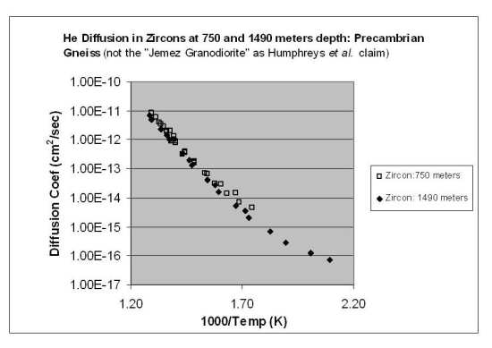
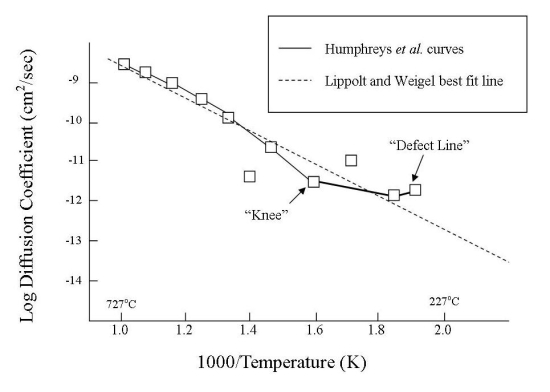
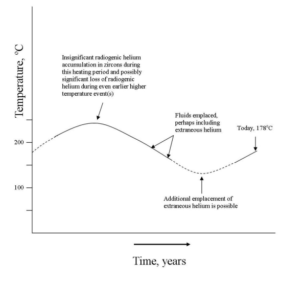
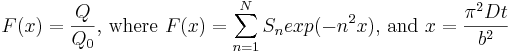
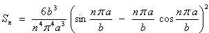
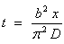
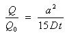

Other Links:
|
ABSTRACT
For decades, young-Earth creationists (YECs) have desperately sought "scientific evidence" to attack radiometric dating and protect their religious interpretations of Earth history. In 2003, many Christian fundamentalists became very excited about YEC statements in Humphreys et al. (2003a), Humphreys et al. (2003b) and Humphreys (2003). Humphreys et al. (2003a) claim that zircons from the "Jemez Granodiorite" (Fenton Hill rock core, New Mexico, USA) contain too much "radiogenic" helium to be billions of years old. By "modeling" the helium diffusion rates in the zircons and assuming some unfounded miraculous increases in radioactive decay rates, Humphreys et al. ( 2003b, 2004) concluded that the zircons are only "6,000 ± 2,000 years old." Not surprisingly, their results conveniently straddle Bishop Ussher's classical 4004 BC "Genesis creation date" for the world.
The results in Humphreys et al. (2003a) and related YEC documents are clearly based on numerous invalid assumptions, flawed arguments, and questionable data, which include:
- invoking groundless miracles to explain away U/Pb dates
on zircons,
- misidentifying samples as originating from the Jemez
Granodiorite,
- performing helium analyses on impure biotite
separations,
- dubiously revising helium measurements from Gentry et al.
(1982a),
- relying on questionable Q/Q0 (helium
retention) values from Gentry
et al. (1982a),
- failing to recognize that the Q0
values (maximum possible amount of radiogenic helium in a
mineral) for their samples were probably much greater than
15 ncc STP/μg,
- inconsistently interpreting already questionable helium
concentrations from samples 5 and 6 to make them comply
with the demands of their "models,"
- seriously underestimating the helium concentrations in
the zircons from 750 meters depth and not realizing that
their Q/Q0 value for this sample (using
Q0 = 15 ncc STP/μg) would be greater
than one and therefore spurious,
- not properly considering the possible presence of
extraneous ("excess") 3He and 4He in
their zircons,
- listing the average date and standard deviation of
their 2004 results as 6,000 ±2,000 years when a
standard deviation (two-sigma) of ± 4,600 years is
more appropriate.
- "fudging" old Soviet data that should have been
ignored,
- deriving "models" that are based on several invalid
assumptions (including constant temperature conditions over
time, Q0 of 15 ncc STP/μg, and
isotropic diffusion in biotite),
- failing to provide standard deviations for biotite
measurements (b values) and then misapplying the
values to samples from different lithologies,
- inserting imaginary defect lines into Arrhenius plots,
and
- deriving and using equations that yield inconsistent "dates."
The relatively high Q/Q0 values of some of the Fenton Hill core zircons may be due to extraneous helium or artifacts of grossly underestimating the Q0 values of uranium- and thorium-rich zircons. Because of these and other problems, the YEC "dates" and conclusions in Humphreys et al. (2003a) and related documents are completely unreliable.
INTRODUCTION
Because radiometric dating methods conflict with their biblical interpretations, young-Earth creationists (YECs) desperately want to undermine the reliability of these methods. Although YECs claim to believe that the Bible is the "powerful word of God", they fully realize that just quoting their scriptures is not going to convince geochronologists and other scientists to abandon their research and stream to church altars in repentance. Therefore, a small group of YEC Ph.D.s associated with the Institute for Creation "Research" (ICR), the Creation "Research" Society (CRS) and formerly "Answers" in Genesis (AiG) formed the RATE (Radioisotopes and the Age of The Earth) committee (Vardiman et al., 2000; Humphreys et al., 2004, p. 3). Simply put, their activities include combing the scientific literature and designing laboratory "experiments" that will somehow verify what they have already concluded, namely that a "literal" interpretation of Genesis is "The Truth" and anything that conflicts with their biblical interpretations is "wrong."
In late 2003, ICR, AiG, YEC computer scientist Dr. David A. Plaisted, YEC Barry Setterfield, Apologetics Press, and many other YEC groups and individuals became very excited by a series of claims in Humphreys et al. (2003a) (Adobe Acrobat [pdf] file) (html version is here and also here). Updated information on this RATE project is summarized in Humphreys et al. (2003b) (Adobe Acrobat file), Humphreys (2003), and Humphreys et al. (2004). Many YECs sincerely believe that these articles are excellent examples of high quality "research" by YEC "scientists" and a crowning achievement for the RATE committee.
The discussions in Humphreys et al. (2003a) and related documents primarily deal with the diffusion of helium from uranium- and thorium-bearing zircons (zirconium silicate, ZrSiO4). Helium includes two major isotopes: 3He and 4He. 3He, which only has one neutron per atom, is "primordial" (Dalrymple, 1984, p. 112); that is, the isotope is a product of the Big Bang (Delsemme, 1998, p. 22-23) and nuclear fusion in stars (Faure, 1998, p. 17). Some 3He was trapped within the Earth when our planet formed. 3He is currently degassing from the Earth's interior. 4He, which has two neutrons in every atom, is another product of the Big Bang and stellar fusion (Delsemme, 1998, p. 22-23; Faure, 1998, p. 17). Additionally, 4He (alpha particles) may form from the radioactive decay of uranium and thorium. The following information from Langmuir (1996, p. 490-491) and Gentry et al. (1982a, p. 1129) (Adobe Acrobat file) lists the half-lives (T1/2) of 238U, 235U and 232Th, the resulting stable lead daughters, and the total number of 4He atoms produced from the decay of each uranium or thorium isotope to their stable leads:
238U → 206Pb + 8 4He with T1/2 = 4.51 x 109 years
235U → 207Pb + 7 4He with T1/2 = 7.1 x 108 years
232Th → 208Pb + 6 4He (a branching ratio) with T1/2 = 1.41 x 1010 years
Using analogous definitions for argon in McDougall and Harrison (1999, p. 11), helium may be classified as "radiogenic" or "extraneous." Radiogenic helium refers to 4He that forms from the radioactive decay of uranium and thorium in a mineral (such as a zircon) and then remains trapped within the mineral. In contrast, 3He and ex-situ 4He are extraneous helium. That is, if 4He escapes from its source mineral and enters and contaminates surrounding fluids or rocks, it becomes extraneous. Volcanism and tectonic activity may cause both 3He and 4He to rise from the Earth's interior, mix, accumulate in minerals in the upper crust, and then perhaps eventually escape into the atmosphere (also see Baxter, 2003).
Humphreys et al. (2003a,b; 2004) and Humphreys (2003) discuss the supposed "young Earth" implications of their helium diffusion experiments with zircons. The zircons were taken from Precambrian subsurface samples collected in 1974 from the Fenton Hill GT-2/EE-2 borehole site (Humphreys, 2003; Gentry et al., 1982b, p. 296 [Adobe Acrobat file]) about 56 kilometers west of Los Alamos, New Mexico, USA. Humphreys et al. (2003a, p. 3 [the page numbers for this document are based on the Adobe Acrobat (pdf) format]) admit that uranium-lead (U/Pb) dates indicate that their zircons contain about 1.5 billion years worth of radiogenic lead. At the same time, they argue that the tiny zircons contain too much "radiogenic" helium to be billions of years old. That is, these YECs believe that the helium should have escaped from the zircons long ago if they really are 1.5 billion years old. By studying helium diffusion rates, Humphreys et al. (2003a) initially concluded that the zircons must only be 4,000 to 14,000 years old. Subsequently in Humphreys et al. (2003b; 2004) and Humphreys (2003), the "age" of the zircons was further restricted to 6,000 ± 2,000 years (one sigma standard deviation using the "biased" equation [i.e., n and not n-1 in the denominator; Davis, 1986, p. 33; Keppel, 1991, p. 43-44, 58]; see discussions below). Not surprisingly, their new "age range" conveniently straddles Bishop Ussher's classical 4004 BC "Genesis creation date" for the world.
YECS MISUNDERSTAND SCIENCE
To avoid any accusations of heresy from other YECs, Humphreys et al. must "reconcile" their helium diffusion results with their 1.5 billion year old U/Pb dates in a manner that only favors their religious agenda. To explain away the U/Pb dates, Humphreys et al. (2003a; 2004, p. 11) use a reprehensible YEC tactic that authentic scientists would never consider - they invoke a miracle. Humphreys et al. (2003a, p. 7; 2004, p. 11) claim that God created a "brief burst of accelerated nuclear decay," which supposedly produced the necessary amounts of radiogenic lead and helium in a short period of time without melting and sterilizing the Earth. Specifically, Humphreys et al. (2003a, p. 7) state:
"As before, the creation model starts with a brief burst of accelerated nuclear decay generating a high concentration C0 of helium uniformly throughout the zircon (like the distribution of U and Th atoms), but not in the surrounding biotite."
Humphreys et al. (2004, p. 11) further reiterate:
"Thus our new diffusion data support the main hypothesis of the RATE research initiative: that God drastically accelerated the decay rates of long half-life nuclei during the earth's recent past."
Humphreys et al. (2003a, p. 15) further speculate that their global "burst of accelerated nuclear decay" could have occurred during the "Creation Week," "the Fall of Adam and Eve," and/or "Noah's Flood." However, for some reason, Humphreys et al. never explain why the Crucifixion of Jesus Christ was not important enough to warrant one of these supposed "accelerated decay events." No matter which Bible stories are invoked to explain their unsubstantiated "accelerated radioactive decay events," Humphreys et al. must then conjure up additional miraculous excuses to keep the heat of these "events" from vaporizing Adam and/or frying Noah and crew.
Because Humphreys et al. are happy with their supposed "helium diffusion age" of 6000 ± 2000 years, they have no need to extend the miracles to affect the diffusion rates of radiogenic helium through zircons and biotites. Indeed, Humphreys et al. (2004, p. 11) readily admit that they don't want to deal with the life-threatening problems that would result from God universally accelerating diffusion rates:
"But diffusion rates are tied straightforwardly to the laws of atomic physics, which are in turn intimately connected to the biochemical processes that sustain life. It is difficult to imagine any such drastic difference in atomic physics that would have allowed life on earth to exist."
The nice thing about unproven and imaginary miracles is that individuals can readily turn them on and off to achieve whatever results they want!
Of course, an "accelerated nuclear decay event" is nothing more than an example of the infamous Gosse (Omphalos) fallacy (also here) and has absolutely no place in science or reality. Anyone can use their imaginations to invoke a miracle to "explain away" any problem they don't like. Because YECs are often willing to "resolve" any problems or prop up any of their religious ideas with unfalsifiable ad hoc miracles, they really don't produce scientific results or models. In contrast, scientists work to rationally solve problems rather than making them vanish with a "Bible wand." Clearly, if Humphreys et al. or anyone else want to reject natural processes and invoke magic to protect their religious, political or philosophical doctrines from rebuttal, then they have the responsibility of presenting definitive evidence of a miracle. As explained below, the discussions in Humphreys et al. (2003a) and related YEC documents don't even come close to justifying the need for a miracle.
Rather than defending the absurdities of their Gosse actions, Humphreys et al. (2003a, p. 4) play an old YEC game and blame scientists for supposedly being biased, narrow-minded and dogmatic because they only embrace the "uniformitarian assumption of invariant decay rates." However, what else can scientists do, especially when the evidence indicates that decay rates have been constant over time? (For example, see McDougall and Harrison, 1999, p. 10, for discussions on the uniformity of the 40K decay rate.) How can the scientific method function if anyone is allowed to conjure up miracles to explain away any problem or scenario that they don't like? While YECs often denounce the methodological naturalism of the scientific method because it excludes magic from scientific hypotheses, YECs forget that methodological naturalism is the foundation of criminal forensics, modern medicine and every other scientific discipline. If psychologists don't blame demons for causing manic depression, forensics scientists don't invoke witchcraft to solve unwitnessed crimes, and defense lawyers don't claim that Voodoo curses were responsible for an unwitnessed murder, why should geologists use the supernatural to explain the origin of a rock?
REACTIONS TO HUMPHREYS ET AL.'S YEC CLAIMS
Not surprisingly, YEC reactions to the claims in Humphreys et al. (2003a) and related YEC documents have been overwhelmingly positive and too often carelessly uncritical. Like many YECs, Carl Wieland of AiG is very confident and proud of the RATE results. He suggests that "uniformitarians" (that is, actualists or scientists) are in an inescapable trap because of the supposed thoroughness of Humphrey et al.'s work:
"The [Humphreys et al., 2003a] paper looks at the various avenues a long-ager might take by which to wriggle out of these powerful implications, but there seems to be little hope for them unless they can show that the techniques used to obtain the results were seriously (and mysteriously, having been performed by a world-class non-creationist expert [Dr. Kenneth A. Farley]) flawed."
As stated in Humphreys et al. (2003a, p. 20), geochemist Dr. Kenneth A. Farley (anonymously referred to as the "experimenter" in Humphreys et al., 2004) performed the helium diffusion analyses for this RATE project. Nevertheless, Dr. Wieland clearly misunderstands how scientists view the work of other scientists. Although Dr. Farley is a well-respected expert, scientists don't consider him or any other colleague to be an infallible pope or prophet. Again, in contrast to Wieland's misconceptions of science and the scientific method, scientists don't appreciate YECs that invoke groundless and unproven miracles to "resolve" any "contradictions" between U/Pb ages and helium diffusion results. If there are any contradictions in geochronology, geochronologists would patiently and persistently look for natural explanations just as other scientists do when solving crimes or diagnosing illnesses.
The analytical procedures and results in Humphreys et al. (2003a) and related YEC documents have been extensively criticized by a number of individuals, including: Dr. Joseph G. Meert and especially an anonymous reviewer "WeHappyFew," whose comments are linked at "More Second-Rate Science by the RATE Group" by Jack DeBaun. Humphreys has replied to some of Meert's criticisms. More recently, Humphreys et al. (2004, p. 9, 12-15) respond to criticisms by old-Universe creationist Ross (2003) and the comments of an anonymous critic. Unfortunately, Humphreys et al. (2004) don't have the courtesy and courage to identify the critic or even reference his/her document(s). Unless privacy issues are involved, authors should identify their opponents and the opponents' literature so that readers can readily evaluate both sides of an issue and fairly make up their own minds.
Despite some inaccurate statements by RATE critics, a careful review of Humphreys et al. (2003a,b; 2004), Humphreys (2003), their key references, claims from Humphrey et al.'s YEC allies, and comments by various skeptics of RATE demonstrate that Humphreys et al.'s "research" is based on unsubstantiated claims, questionable numbers, invalid assumptions, inconsistent equations, and many flawed arguments. As discussed below, some of their mistakes may be trivial. However, other errors and uncertainties completely undermine any confidence in Humphreys et al.'s claims.
IMPROPER SAMPLE IDENTIFICATION AND HANDLING TECHNIQUES
Humphreys et al. Misidentify their Rock Samples
When performing research, scientists must carefully follow all quality control/quality assurance (QC/QA) procedures. Essential QC/QA procedures include properly collecting, identifying, labeling, storing and monitoring all samples. If the collection site of a specimen is unknown or if it has been improperly stored for several decades, any resulting data are often useless.
Unfortunately for them, Humphreys and his colleagues have failed to comply with the most fundamental QC/QA requirements. Throughout their article (2003a), Humphreys et al. claim that they have studied biotites and zircons from samples of the "Jemez Granodiorite" collected at a depth of 750 meters from the Fenton Hill borehole site. While Gentry et al. (1982a) properly recognized that some of the Fenton Hill borehole samples are gneisses, Humphreys et al. (2003a, p. 3) erroneously assert that all six subsurface samples in Gentry et al. (1982a) came from this granodiorite. More recently, Humphreys et al. (2004, p. 5; 2003b) continue to refer to their "granodiorite" samples from depths of 750 and 1490 meters. Nevertheless, a review of the subsurface geology of the Fenton Hill borehole site as described in Sasada (1989, Figure 2, p. 258 - NOT "Sakada" as listed in the references of Humphreys et al., 2003a, p. 16 and Humphreys et al., 2004, p. 16) indicates that a granodiorite is not encountered at the site until depths of more than 2500 meters. According to Sasada (1989, p. 258), Precambrian gneisses and mafic schists occur between depths of 722 meters and to slightly below 2500 meters. In particular, at depths of 750 and 1490 meters, Humphreys et al. (2003a,b) clearly sampled a Precambrian gneiss (a highly metamorphosed volcanic, intrusive or sedimentary rock) and not a granodiorite (an intermediate intrusive igneous rock) (Table 1).
| Sample No. | Depth (meters) | Subsurface Temp. °C | Lithology | Gentry et al.'s He measurements
(Q) (ncc STP/μg) |
Revised He measurements in Humphreys et al. (Q) (ncc STP/μg) | Q/Q0 ±30% |
|---|---|---|---|---|---|---|
| 0 | 0 | 20 | Bandelier Tuff | 82 | 8.2 | ----- |
| 2002 | 750 | 96 | Precambrian Gneiss | ---- | ~12.1 | ~0.80 |
| 1 | 960 | 105 | Precambrian Gneiss | 86 | 8.6 | 0.58 |
| 2003 | 1490 | 124 | Precambrian Gneiss | ----- | 6.3 | 0.42 |
| 2 | 2170 | 151 | Precambrian Gneiss and/or Mafic Schist | 36 | 3.6 | 0.27 |
| 3 | 2900 | 197 | Jemez Granodiorite | 28 | 2.8 | 0.17 |
| 4 | 3502 | 239 | Jemez Granodiorite? | 0.76 | 0.16 | 0.012 |
| 5 | 3930 | 277 | Jemez Granodiorite? | ~0.2 | ~0.02 | ~0.001 |
| 6 | 4310 | 313 | Jemez Granodiorite? | ~0.2 | ~0.02 | ~0.001 |
YECs might argue that because Precambrian granodiorites and gneisses were all magically zapped into existence during the six 24-hour days of the "Creation Week" (e.g., Snelling and Woodmorappe, 1998, p. 530), distinctions between Precambrian rocks really aren't important. Despite the fact that YECs invoke myths and miracles to explain away most Precambrian intrusive rocks (e.g., Snelling and Woodmorappe, 1998, p. 530), Humphreys et al. (2003a, p. 2) unintentionally admit that at least some intrusive rocks have significant histories when they claim that zircon crystals become imbedded in larger crystals as a magma "cools and solidifies." Nevertheless, in contrast to YEC fantasies about rocks magically forming during a "Creation Week," scientists recognize that gneisses and granodiorites have very different and often complex origins, chemistries, and histories. This is especially true for gneisses, which (by definition) have undergone one or more high-temperature metamorphic heating events after the formation of their precursor igneous or sedimentary rocks (Hyndman, 1985, p. 442). Of course, like an old scratched phonograph record or a dented old car (scroll down), the properties of a metamorphosed rock often indicate a long and complex history.
Besides lithological and chemical dissimilarities, the ages of the Jemez Granodiorite and the overlying gneiss that Humphreys et al. (2003a,b; 2004) actually studied are noticeably different. Zartman (1979) provides a date of 1500 ± 20 million years old for the biotite granodiorite (Jemez) at a depth of 2,903.8 meters. Not surprisingly, the zircons from the Precambrian gneiss at 750 meters depth provide a somewhat younger date of 1439.3 ± 1.8 million years old (Appendix A of Humphreys et al., 2003a).
Zartman (1979, p. 18) also found that the U/Pb dates for the zircons and epidotes from the Jemez granodiorite were discordant. The U/Pb results in the table of Appendix A of Humphreys et al. (2003a, p. 17) also indicate discordant conditions for the gneiss. U/Pb discordance is due to the loss of lead and intermediate daughters (in most cases) and/or uranium addition (Faure, 1998, p. 289-290), probably because of metamorphism or other alteration events. The origin of gneissic textures in the rocks studied by Humphreys et al. would require one or more metamorphic events and these events could have caused lead losses (Faure, 1998, p. 288-290). Because helium atoms are uncharged, smaller and therefore much more mobile than lead, any events that resulted in lead loss probably would have caused much greater losses of radiogenic helium.
YECs might argue that misidentifying a gneiss as the Jemez Granodiorite is not a serious mistake and that this error would not significantly affect their zircon diffusion studies or their "dating" results. However, this misidentification is more serious than YECs might realize. As discussed below, Humphreys et al. have unknowingly taken laboratory measurements from a gneiss and then misapplied them to dating samples 3-5, which are from the Jemez Granodiorite and perhaps deeper lithologies. In the following statements, Humphreys et al. (2003a, p. 6) even admit that mixing experimental results from different rock types is not appropriate:
"Measurements of noble gas diffusion in a given type of naturally occurring mineral often show significant differences from site to site, caused by variations in composition. For that reason it is IMPORTANT to get helium diffusion data on zircon and biotite from the SAME rock unit (the Jemez Granodiorite) which was the source of Gentry’s samples." [my emphasis]
This sample misidentification blunder also says a lot about Humphreys et al.'s inability to pay careful attention to important geological details and it raises some serious doubts about the quality and reliability of their other work.
Inadequate Biotite Separations from the 750-Meter Sample
Successful helium diffusion studies on biotites and zircons require mineral samples that are sufficiently pure. In Appendix C of Humphreys et al. (2003a, p. 20), Dr. Kenneth A. Farley notes that the purity of the 750-meter zircon samples was good:
"We verified that the separate was of high purity and was indeed zircon."
In contrast, the following statements by Dr. Farley and Humphreys et al. {in braces} in Appendix B of Humphreys et al. (2003a, p. 19) raise serious doubts about the acceptable purity of the 750-meter biotites:
"He diffusion in this [Fenton Hill core biotite] sample follows a rather strange pattern, with a noticeable curve at intermediate temperatures. I have no obvious explanation for this phenomenon. Because biotite BT-1B [Beartooth Gneiss, Wyoming, USA] did not show this curve, I doubt it is vacuum breakdown. I ran more steps, with a drop in temperature after the 500°C step, to see if the phenomenon is reversible. It appears to be, i.e., the curve appears again after the highest T step, but the two steps (12, 13) that define this curve had very low gas yield and high uncertainties. It is possible that we are dealing with more than one He source (multiple grain sizes or multiple minerals?). {We [Humphreys et al.] think it is likely there were some very small helium-bearing zircons still embedded in the biotite flakes, which would be one source. The other source would be the helium diffused out of larger zircons no longer attached to the flakes.}"
According to Humphreys et al. (2004), Jakov Kapusta of Activation Laboratories, Ltd., extracted the biotites and zircons from both the 750-meter (p. 4-5) and 1490-meter (p. 5) samples. However, Humphreys et al. (2003a, p. 6, 17) give a different account and claim that ICR personnel were responsible for extracting the biotites from the 750-meter specimen. Considering the ICR's poor record at separating specific minerals from rocks, it's not surprising that Farley and Humphreys et al. (2003a) would discover impurities in the biotites if ICR personnel were actually responsible for the separations. Of course, separating minerals from rocks is not easy and pure separations are not always possible. Nevertheless, many geochemical studies require high purity separations even if it means sorting and cleaning microscopic grains by hand. Because Humphreys et al. (2003a, p. 19) admit that their samples probably contain microscopic zircon impurities or other sources of helium contamination, the 750-meter biotite results in their Appendix B cannot be trusted.
MYSTERIOUS CHANGES IN GENTRY et al.'S DATA
In 1982, YEC Robert V. Gentry was lead author on a couple of peer-reviewed articles on the zircons of the Fenton Hill GT-2/EE-2 cores. Table 1 in Humphreys et al. (2003a, p. 3) borrows a lot of information from the table in Gentry et al. (1982a, p. 1130). In a footnote with their reference 9 (Gentry, "Glish" [sic, Gush] and McBay; i.e., Gentry et al., 1982a), Humphreys et al. (2003a, p. 15) comment on several changes that were made to the Gentry et al. (1982a) data when they were imported into Humphreys et al. (2003a, p. 3):
"After consulting with Dr. Gentry, I [Humphreys?] have corrected, in the third column of my Table 1, two apparent typographical errors in the corresponding column of his table. One is in the units of the column, the other is in sample 4 of that column. The crucial ratios Q/Q0 in column four were correctly reported, as we have confirmed with our own data."
A similar statement is made in Humphreys et al. (2004, p. 16).
My Table 1 summarizes the differences between the original data in Gentry et al. (1982a, p. 1130) and the revisions in Humphreys et al. (2003a, p. 3). For example, the helium concentration of sample 4 was modified from 0.76 to 0.16 nano cubic centimeters (standard pressure and temperature, STP) He/microgram zircon (ncc STP/μg; Table 1). Humphreys et al. in consultation with Gentry also reduced the concentrations of the other helium measurements by ten times. Although Gentry et al. (1982a) contains several obvious typographic errors (for example, the depth of the lowermost core sample is sometimes listed as "11310" instead of 4310 meters), the changes involving the helium results are suspicious and could be more likely a response to innocent math or measurement errors than simply correcting miscopied numbers from a laboratory notebook. Clearly, Humphreys et al. (2003a) should have provided more details to justify these mysterious changes. To thwart any unfair and cynical accusations of data manipulation, they should also explain how the mistakes in Gentry et al. (1982a) were discovered and why these errors went unnoticed for more than 20 years.
QUESTIONABLE Q/Q0 VALUES
A Q/Q0 value compares the measured and expected helium values for a zircon or other mineral. Q refers to the measured quantity of helium (presumably only radiogenic 4He) in a mineral. From its crystallization to the present, Q0 is the maximum amount of radiogenic helium (4He) that could accumulate in a mineral from the radioactive decay of its uranium and thorium (Humphreys et al., 2003a, p. 3). Q0 assumes no diffusion loss ("leakage") of helium from the host mineral over time or any helium contamination from outside sources (i.e., extraneous helium). To estimate the theoretical maximum amounts of radiogenic helium in their zircons (Q0), Gentry et al. (1982a, p. 1129) made several questionable assumptions:
"For the other zircons from the granite [sic, granodiorite] and gneiss cores [samples 1-6], we made the assumption that the radiogenic Pb concentration in zircons from all depths was, on the average, the same as that measured (Zartman, 1979) at 2900 m, i.e., ~80 ppm with 206Pb/207Pb and 206Pb/208Pb ratios of ten (Gentry et al., ...[1982b]; Zartman, 1979). Since every U and Th derived atom of 206Pb, 207Pb, and 208Pb represents 8, 7 and 6 alpha-decays respectively, this means there should be ~7.7 atoms of He generated for every Pb atom in these zircons."
Although Q0 assumes "negligible diffusion loss" of helium over time, Gentry et al. (1982a, p. 1129) applied "compensation factors" to their calculations because they recognized that radiogenic helium could initially escape from a zircon grain if the decay occurred close to the edge of the grain or within a very small zircon. The escape of helium from a zircon during its radiogenic formation is called "alpha ejection" (Farley et al., 1996; Tagami et al., 2003). Once a 4He (alpha) particle forms from radioactive decay, the particle will typically travel about 11 to 29 microns in a zircon grain before stopping (Farley et al., 1996, p. 4224). Gentry et al. (1982a, p. 1129-1130) assume that 30-40% of the radiogenic helium in their small (40-50 microns) zircons was lost because of "alpha ejection." Equations in Tagami et al. (2003, p. 59) indicate that helium loss through alpha ejection is probably closer to 50% for zircons with lengths and widths of about 40-50 microns and perhaps a 40% loss for the 50-75 micron zircons in Table 1 of Gentry et al. (1982a). Nevertheless, Gentry et al. (1982a) do not adequately explain how the "compensation factors" were exactly used in their calculations. They simply (p. 1130) state:
"The uncertainties in our estimates of the zircon masses and compensation factors probably mean these last [Q/Q0] values are good to only ±30%."
Humphreys et al. (2004, p. 9) state that Gentry obtained an overall Q0 value of about 15 ncc STP/μg for the zircons in samples 1-6. Adequate details on how this value was derived are not in Gentry et al. (1982a), Gentry et al. (1982b) or any of the Humphreys documents.
Using available information from Gentry et al. (1982a), the revised helium measurements in Humphreys et al. (2003a, p. 3) and ignoring the possibility of extraneous 4He and 3He, I was unable to derive a Q0 of 15 ncc STP/μg for the zircons. Instead, I calculated Q0 as 41 ncc STP/μg. Therefore, my Q/Q0 values for samples 1-6 are different. My detailed calculations of Q0 and Q/Q0 are shown in Appendix A at the end of this document. In Table 2, my Q/Q0 values are compared with the values from Gentry et al. (1982a) and Humphreys et al. (2003a).
| No. | Depth (m) | He measurements in Humphreys et al. (Q) (ncc STP/μg) | Gentry et al.'s and Humphreys et al.'s Q/Q0 (Q0 = 15 ncc STP/μg) | My calculated Q/Q0 (Q0 = 41 ncc STP/μg) |
|---|---|---|---|---|
| 1 | 960 | 8.6 | 0.58 | 0.21 |
| 2 | 2170 | 3.6 | 0.27 | 0.088 |
| 3 | 2900 | 2.8 | 0.17 | 0.068 |
| 4 | 3502 | 0.16 | 0.012 | 0.0039 |
| 5 | 3930 | ~0.02 | ~0.001 | ~0.0005 |
| 6 | 4310 | ~0.02 | ~0.001 | ~0.0005 |
Considering the questionable assumptions and vague explanations in Gentry et al. (1982a) and Humphreys et al. (2003a; 2004), their methods for calculating Q/Q0 values are probably erroneous. Unfortunately, statistically reliable Q and Q0 values are not available for individual zircons from samples 1-6. Therefore, a less definitive approach must be used to test the plausibility of the Q/Q0 values in Gentry et al. (1982a) and Humphreys et al. (2003a,b; 2004). Using uranium and thorium data on individual zircon grains from Gentry et al. (1982b) and a number of unavoidable assumptions, I derived an alternative set of Q/Q0 values for the zircon grains from samples 1, 5, and 6 (Table 3). The detailed calculations are shown in Appendix B.
| Zircon ID | Depth (m) | Uranium (parts per million) in zircons | Thorium (parts per million) in zircons | Q/Q0 in Humphreys et al. (2003a) | Maximum and Minimum Q/Q0 values using Q values from Humphreys et al. (2003a) |
|---|---|---|---|---|---|
| 1A | 960 | 240 - 5300 | 800 - 2000 | 0.58 | 0.011 - 0.21 |
| 1B | 960 | 465 - 1130 | 220 - 750 | 0.58 | 0.047 - 0.17 |
| 1C | 960 | 1250 -3300 | 100 - 275 | 0.58 | 0.018 - 0.067 |
| 5A | 3930 | 83 - 220 | 63 - 120 | ~0.001 | ~0.0005 - 0.002 |
| 5B | 3930 | 90 - 110 | 60 - 90 | ~0.001 | ~0.001 - 0.002 |
| 6A | 4310 | 110 - 550 | 40 - 85 | ~0.001 | ~0.0002 - 0.002 |
| 6B | 4310 | 125 - 210 | 63 -175 | ~0.001 | ~0.0006 - 0.001 |
The Q/Q0 values in Gentry et al. (1982a), Humphreys et al. (2003a,b; 2004), and my Tables 2 and 3 are certainly far from ideal. However, I would argue that my values in Tables 2 and 3 are the best that we can currently obtain. Although my Q/Q0 zircon results at depths of 3930 and 4310 meters (samples 5 and 6 in Table 1) are similar to those in Humphreys et al. (2003a) and Gentry et al. (1982a), my values from 960 meters (sample 1) and samples 2-4 in Table 2 are always significantly lower. The calculations in Appendix B also clearly indicate that Q0 values may be substantially greater than the 15 ncc STP/μg proposed by Gentry et al. (1982a) and Humphreys et al. (2004, p. 9). Because (as discussed below) Q0 and the resulting Q/Q0 values have important roles in the helium diffusion "models" and "dates" of Humphreys et al. (2003a, equations 12, 14a-b, 16, etc.) and associated RATE documents, lower values would significantly erode their YEC interpretations and claims.
HIGHER THAN EXPECTED HELIUM CONCENTRATIONS IN ZIRCONS FROM DEPTHS OF 750 METERS
As stated in Humphreys et al. (2003a, p. 20), Dr. Farley performed helium analyses on zircons from a depth of 750 meters in the Fenton Hill GT-2 borehole core. Again, these zircons were taken from a gneiss and not the Jemez Granodiorite as Humphreys et al. (2003a) repeatedly claim. During the study, non-YEC Dr. Farley was not informed that he was providing data for a YEC project (Humphreys et al., 2003a, p. 6-7).
In Appendix C of Humphreys et al. (2003a, p. 20), Dr. Farley refers to the zircon samples (750-meters depth) as releasing "540" nanomoles of helium/gram of sample (nmol/g) (or ~12.1 x 10-9 cc STP/μg of zircon; Humphreys et al., 2004, Table I, p. 3) during the initial heating phase to 500°C. As shown in the following quotation, Humphreys et al. (2003a, p. 13) feel that this partial helium measurement is somehow compatible and supportive of their revisions (see my Table 1) of Gentry et al.'s (1982a) total helium measurements:
"But as Appendix C reports, our experimenter Kenneth Farley, not knowing how much he should find and going to only 500°C, got a PARTIAL (NOT EXHAUSTIVE) YIELD of 540 nanomoles of helium per gram of zircon, or in Gentry's units, 11 x 10-9 cm3/microgram [note: the correct value as listed in Humphreys et al., 2004, p. 3, is 12.1 x 10-9 cm3/microgram]. That is on the same order of magnitude as Gentry's results in Table 2 [Humphreys et al., 2003a], which reports the TOTAL (EXHAUSTIVE) amount liberated after heating to 1000°C until no more helium would emerge. Thus our experiments support Gentry's data." [my emphasis]
Because the "540" nmol/g is only a partial helium measurement and not a finalized total value, Humphreys et al. (2004, p. 3) have no justification for even reporting this value as an "approximation" in their Table 1 (that is, ~ 12.1 ncc STP/μg). Humphreys et al. (2003a, p. 13) also have no rational reason for comparing this incomplete analysis with revisions of Gentry et al.'s data and then declaring that the measurements "support" each other. The fallacy of this comparison becomes very clear when all of the data in Table C1 of Appendix C of Humphreys et al. (2003a, p. 21) are reviewed. In the table, heating steps 1-14 represent the initial temperature increase to 500°C. If the nmol/g concentrations of helium are summed for the 14 steps (5.337083... 171.5538), the total amount of released helium is 864 nmol/g and not 540 nmol/g. If the amount of helium released by all 44 steps is summed, a total of 1794 nmol/g is obtained. However, the cumulative fraction for step 44 in Table C1 is only 0.423501. By analogy with the biotite analyses in Tables B1 and B2 in Humphreys et al. (2003a, p. 18-19) and the zircon studies in Table II of Humphreys et al. (2004, p. 6), Farley must have obtained 57.6499% of the total helium from the zircon sample during a fusion step. This fusion step would have released 2442 nmol/g of helium giving a grand total of 4236 nmol/g or 9.5 x 10-8 cc STP/μg (= 95 ncc STP/μg) of helium from the sample.
Humphreys et al. (2004, Table I, p. 3) claim that their 750-meter sample has a Q/Q0 value of ~0.80, or ~12.1 ncc STP/μg divided by Gentry's Q0 of 15 ncc STP/μg. However, the actual Q value for the 750-meter sample is 95 ncc STP/μg. Although Q/Q0 values are always supposed to be one or less, using Gentry's Q0, Q/Q0 = 95 ncc STP/μg / 15 ncc STP/μg = 6.3! My Q0 value from Appendix A (41 ncc STP/μg) still yields Q/Q0 = 2.3. Q/Q0 values greater than one mean that the zircons have more helium than expected.
The question then arises, why is Q/Q0 > 1 for the 750-meter sample? When determining Q, did Farley analyze a group of exceptionally uranium- and thorium-rich zircons? If so, these zircons could have had Q0 >> 41 ncc STP/μg. As discussed in Appendix B of this report, uranium and thorium data from Gentry et al. (1982b) are highly variable and suggest that Q0 values for the Fenton Hill zircons could be exceptionally high in many cases. Even the uranium concentrations of the three 750-meter zircons listed in Appendix A of Humphreys et al. (2003a) show significant variations (that is, 218 to 612 ppm).
Another possible explanation for Q/Q0 > 1 is the presence of extraneous ("excess") 3He and 4He in the 750-meter zircons. That is, have these zircons been contaminated with helium from the mantle or surrounding locations in the crust? To properly define the Q/Q0 values and eliminate the possibility of extraneous helium, accurate uranium, thorium, 3He, and 4He analyses must be performed on the same zircon grains. Any analyzed set of grains must also be statistically representative of the zircon populations of their host rocks. Furthermore, the zircons should be collected from a freshly recovered well-core and not from a core that has been stored under unspecified surface conditions for more than 30 years. Until all of these requirements are met, the Q/Q0 values will remain poorly defined and unable to support any of the "models" in Humphreys et al. (2003a, p. 7-12; 2004).
EXTRANEOUS HELIUM IN THE BOREHOLE SAMPLES?
As discussed in the previous section, extraneous helium (3He and 4He) is one possible explanation for the relatively high Q/Q0 value of the 750-meter zircons. Rather than properly considering the presence of extraneous helium in their samples, it's obvious from their writings that Humphreys et al. just assume that all of the helium in their zircons is radiogenic; that is, in-situ 4He from the radioactive decay of the zircons' uranium and thorium. Although Humphreys et al. (2003a, p. 3) claim that Gentry et al. measured the amount of 4He in their samples, Gentry et al. (1982a) clearly give no indication that they distinguished extraneous 3He and 4He from radiogenic 4He in any of their analyses. Simply because of how zircons from samples 1-4 degassed, and especially two groups from sample 4 with relatively large (150-250 microns) specimens, Gentry et al. (1982a, p. 1130) thought that some of the helium in samples 1-4 (Table 1) was radiogenic:
"That is, in the two deepest zircon groups (3930 and 4310 m [samples 5 and 6]), we observed only short bursts of He (~1-2 sec) in contrast to the prolonged 20 sec or more evolution of He which was typical of He liberation from zircon groups down to and including 3502 m [samples 1-4]. In fact, it was this prolonged He liberation profile seen in two 150-250 micron size zircon groups from 3502 m [sample 4] which convinces us that SOME residual He is still trapped in the zircons down to that depth (239°C)." [my emphasis]
Clearly, these degassing profiles did not quantify and eliminate the possible presence of extraneous helium in the relatively small (50-75 microns) zircons in samples 1-4, which were used to derive Gentry et al.'s Q/Q0 values. With respect to samples 5 and 6, Gentry et al. (1982a, p. 1130) even admit:
"In fact, at present we are NOT certain whether the minute amounts of He recorded from the deepest zircons (3930 and 4310 m [samples 5 and 6]) are actually residual He in the zircons OR DERIVED FROM SOME OTHER SOURCE." [my emphasis]
"Derived from some other source" would probably mean extraneous helium or possible contamination from their analytical procedures.
Extensive subsurface helium deposits occur in many parts of New Mexico, including sites in Union (Des Moines), San Juan (Table Mesa), Harding (Bueyeros), Torrance (Estancia Valley) and other counties. Additionally, the Fenton Hill borehole site is located only about one kilometer from the western boundary of the volcanic and helium-bearing Valles Caldera (Sasada, 1989, p. 257). The caldera formed between 1.45 and 1.12 million years ago (Sasada, 1989, p. 257). The most recent volcanism associated with the caldera occurred roughly 130,000 years ago (Sasada, 1989, p. 258). Even YEC Vardiman (1990, p. 6) admits that volcanic events may release helium. Clearly, Gentry et al. and Humphreys et al. should have selected samples from another area if they wanted to avoid the possibility of extraneous helium contamination.
Significant 3He has been found in subsurface fluids in the rocks of the Valles Caldera (sites Baca-4, Baca-13, Baca-15, Baca-24, VC-2A and VC-2B; Goff and Gardner, 1994, p. 1816) only about 8 to 11 kilometers from the Fenton Hill site (see the map in Figure 2 of Goff and Gardner, 1994, p. 1804-1805). In particular, geothermal fluids in the Precambrian "granitoid" subsurface rocks at site VC-2B had high R/RA values which ranged from 4.8 to 5.4 (Goff and Gardner, 1994, p. 1816), where R/RA = 3He/4He of the sample divided by 3He/4He of air. If only 4He was present in the fluids of the Baca and VC sites, the R/RA values should have been zero. Goff and Gardner (1994, p. 1816) and Smith and Kennedy (1985, p. 893) reasonably argue that the 3He enrichment in the Baca and VC samples originated from sources in magmas or the mantle.
Smith and Kennedy (1985, p. 897) also indicate that 4He is currently present in fluids from the Baca sites in concentrations that range from 0.0183 cc/kg for Baca-15 to 0.1173 cc/kg for Baca-4 (or 0.0183 to 0.1173 ncc STP/μg of extraneous 4He). According to Goff and Gardner (1994, p. 1816), wells Baca-15 and Baca-4 are greater than 1,000 meters deep and have bottom temperatures of 267°C and 295°C, respectively. The nearby Fenton Hill rocks could also easily contain at least 0.01 ncc STP/μg of extraneous helium. Unless Humphreys et al. can thoroughly identify and subtract out any extraneous background helium, no one should expect realistic results from the "creation" and "uniformitarian models" (for example, the extremely small Q/Q0 values predicted by the "uniformitarian model" in Table 5 of Humphreys et al., 2003a, p. 12 could be easily masked by extraneous helium).
YECs often improperly claim that "undetected excess" (extraneous) argon (see definitions in McDougall and Harrison, 1999, p. 11) nullifies K-Ar and Ar-Ar dating. Certainly, extraneous argon has been known to contaminate some minerals (Faure, 1986, p. 72). AiG is also swift to tell their readers that diamonds may be contaminated with "excess" (extraneous) argon (also see Faure, 1986, p. 72). Because helium atoms are much smaller than argon atoms, they would tend to more readily move in and out of most minerals than argon. So, if YECs enthusiastically accept the existence of extraneous argon, why shouldn't they acknowledge that subsurface minerals (including zircons) could be substantially contaminated with extraneous helium?
If extraneous helium is present in the Fenton Hill zircons, at least 3He might be identified and appropriate corrections could be made. Furthermore, there are techniques for identifying extraneous ("excess") argon (Hanes, 1991; McDougall and Harrison, 1999, p. 114-130) and analogous methods might be able to identify extraneous 4He. Quartz and other impermeable and low uranium minerals should also be analyzed for extraneous helium. If extraneous helium occurs in quartz, it's probably also present in adjacent zircons. So, before Humphreys et al. can use their "studies" to promote their religious agenda, they clearly need to measure the R/RA values of fresh (not >30 years old) samples and eliminate any possible effects from extraneous helium.
In response to the possibility of extraneous helium in their zircons or claims by their critics that high helium concentrations could exist in the biotites surrounding their zircons, Humphreys et al. (2003a, p. 13) state:
"A second uniformitarian line of defense might be to claim that the helium 4 concentration in the biotite or surrounding rock is presently about the same as it is in the zircons. (Such a scenario would be very unusual, because the major source of 4He is U or Th series radioactivity in zircons or a few other minerals like titanite or apatite, but not biotite.) The scenario would mean that essentially no diffusion into or out of the zircons is taking place. However, our measurements (Appendix B) show that except for possibly samples 5 and 6, the concentration of helium in the biotite [sect. 6, between eqs. (7) and (8)] is much lower than in the zircons. Diffusion always flows from greater to lesser concentrations. Thus helium must be diffusing out of the zircons and into the surrounding biotite."
Obviously, Humphreys et al. have an invalid Lyell uniformitarian mindset that YECs so often accuse scientists of possessing. That is, Humphreys et al. falsely believe that if the helium concentrations in "surrounding" biotites are now relatively low, then these concentrations must have always been low. Humphreys et al. fail to realize that the zircons may have been contaminated with extraneous helium many thousands of years ago. Since then, the extraneous helium could have largely dispersed from the biotites and other relatively permeable minerals. However, it may still remain trapped at 10‑8 to 10‑11 cc STP/μg in relatively impermeable zircons. Also rather than always penetrating the zircons, helium pressures surrounding the minerals may have been periodically high enough in the past to temporarily prevent or extensively slow down the escape of any helium from the zircons.
SOME GENERAL DIFFUSION ISSUES
Helium Solubility in Zircons, "Interface Resistance" and Open Systems
In response to an unknown critic, Humphreys et al. (2004, p. 12-14) argue that "interface resistance" and helium solubility in zircons are not significant enough to hinder the flow of helium out of their zircon samples. As explained above, the Jemez Granodiorite (Zartman, 1979) and the overlying gneiss (Appendix A in Humphreys et al., 2003a) have discordant U/Pb dates, which indicate open system behavior for lead and/or uranium, and no doubt helium. Open systems not only mean that helium may periodically flow out of zircons, but if the helium pressures surrounding the minerals were once higher, extraneous helium could have periodically flowed into them. To enter a zircon, extraneous helium need not actually dissolve into the zircon crystalline structure or readily migrate across the boundary (interface) between a biotite and zircon crystal. The helium could have entered and become trapped in fractures, permeable metamict areas and other significant voids in the zircons. Again, such event(s) could explain the high helium values in the 750-meter zircons.
Fudging Old and Ambiguous Soviet Data
Humphreys et al. (2003a, p. 6 and 2004, p. 2) cite Magomedov (1970), a Soviet paper which contains some early data on helium diffusion in zircons. Only a brief abstract of Magomedov (1970) is readily available in English:
"Heating experiments at 1000 and 1150°C and up to 48 hours on zircon suggest loss of surface lead and helium is considerable during the first few hours. Estimates of activation energy of bulk diffusion are 58 kcal/mole for Pb in zircon, and only 15 kcal/mole for He."
Humphreys, however, has an English translation of the entire article (Humphreys et al., 2003a, p. 16).
Humphreys et al. (2003a, p. 6) describe a graph in Magomedov (1970) and reproduce it in their Figure 5 (p. 6). The y-axis of the graph in Magomedov (1970) has units of "ln(D,σ)," where D refers to the diffusion coefficient and σ represents electrical conductivity, which may influence diffusion in some crystals according to an old reference, Girifalco (1964, p. 92-102). Based on Reiners et al.'s (2002) results on helium diffusion in zircons from the Fish Canyon Tuff, Humphreys et al. (2003a, p. 6) conclude that the units on Magomedov's graph must be "incorrect" and that the actual units should be log base 10 D (log10 D). However, Magomedov's zircons were very metamict; that is, severely damaged by radiation probably from high uranium concentrations. Considering the conditions of the samples and the fact that different specimens of the same mineral may have significantly dissimilar physical and chemical properties, the high helium diffusion coefficients in Magomedov (1970) could be real and Humphreys et al. (2003a) may not be justified in "correcting" the Soviet data. Very different helium diffusion rates would be expected, especially when highly metamict zircons are compared with essentially non-metamict specimens or if comparisons are made between high- and low-helium zircons. While Humphreys et al. (2003a, p. 6) boast that their log10D interpretation of the Soviet data is still five orders of magnitude too high for their "uniformitarian model," they forget to mention that before they "corrected" the Magomedov (1970) data, these Soviet results were at least five orders of magnitude higher than their “Jemez” measurements and the Fish Canyon Tuff data in Reiners et al. (2002).
Instead of altering the Magomedov (1970) data in their (2003a) Figures 5 (p. 6) and 6a (p. 7), Humphreys et al. should have remembered their own pronouncement (2003a, p. 6):
"Measurements of noble gas diffusion in a given type of naturally occurring mineral often show significant differences from site to site, caused by variations in composition."
The data in Magomedov (1970) are 35 years old and Humphreys et al. (2003a, p. 1, 6) and Humphreys et al. (2004, p. 2) are certainly correct when they describe the data as ambiguous. Humphreys et al. (2003a) should have simply ignored these questionable results rather than adjusting the units to fit data from Reiners et al. (2002) and ultimately their own results (Figure 6a in Humphreys et al., 2003a, p. 7).
Arrhenius Plots in Humphreys et al.: Fictional Knees and Imaginary Defect Lines
Arrhenius graphs describe how diffusion coefficients change with temperature under laboratory conditions (Humphreys et al., 2003a, p. 5; their Figures 4a and 4b). Quoting Girifalco (1964, p. 102, 126), Humphreys et al. (2003a, p. 5) argue that Arrhenius plots "typically" consist of two different-sloping lines connected by a "knee." Because zircons and most other minerals have fractures, impurities, dislocated atoms, and other defects in their crystalline structures, Humphreys et al. (2003a, p. 5, 7; their Figure 4) expect "knees" and shallow-sloped defect lines to appear at lower temperatures on most Arrhenius plots. For example, Humphreys et al. (2003a, p. 7) claim:
"Because the New Mexico [Fenton Hill] zircons are radioactive, they must have some defects and should have a knee at some lower temperature than 300°C."
Although almost all natural crystals contain considerable impurities and other defects, these features may not always produce "defect lines" on Arrhenius plots as Humphreys et al. (2003a, p. 5, 7) expect. The Arrhenius plots may be fairly linear, like the examples with the Fish Canyon Tuff zircons in Reiners et al. (2002), other silicate minerals in Lippolt and Weigel (1988), or even Humphreys et al.'s (2003a; 2004) actual data as shown in my Figure 1. Girifalco (1964, p. 100-102, 124, 126) mentions that impurities in ionic crystals (like halite ["table salt"]) and polycrystalline (multiple, usually intergrown, crystals) samples may produce "extrinsic" curves (that is, "knees" and "defect lines" like in Figure 4a of Humphreys et al., 2003a, p. 5). Because the descriptions in Appendix C of Humphreys et al. (2003a, p. 20) indicate the presence of single crystal (not polycrystalline) zircon grains and not overly excessive metamict features, significant knees and defect lines may not be present.
|
 |
A knee and a defect curve are visible in Figure 5 of Humphreys et al. (2003a, p. 6) for the exceptionally metamict Soviet zircons. However, Humphreys et al. (2003a, p. 7) admit:
"At 390°C (abscissa = 1.5), the Russian data have a knee, breaking off to the right into a more horizontal slope for lower temperatures. That implies a high number of defects (see sect. 4), consistent with the high radiation damage Magomedov reported. The Nevada and New Mexico data go down to 300°C (abscissa = 1.745) with no strong knee, implying that the data are on the intrinsic part of the curve."
Measurements in Humphreys (2003) and Humphreys et al. (2004, Table II, p. 6) extend down to 175°C, but were performed on zircons from depths of 1490 meters rather than 750 meters. Now, Figure 6 in Humphreys et al. (2004, p. 7) might show a slight "knee" at about 1.75 = 1000/T(Kelvin) (approximately 300°C), which happens to correspond to the lowest temperature measurement on the 750-meter zircons (also see my Figure 1). However, contrary to the following prediction from Humphreys et al. (2003a, p. 7), no obviously sharp knee resembling the one in the Soviet data is present on Humphreys et al.'s curve:
"Because the New Mexico zircons are radioactive, they must have some defects and should have a knee at some lower temperature than 300°C."
In the figure on p. iii of Humphreys (2003) and Figure 6 of Humphreys et al. (2004, p. 7), Humphreys et al. draw a "sharp knee" at about 197°C (1000/T(K) = 2.13) as part of a two-sloped curve generated by their "creation model." However, once the "creation model curve" is removed from their figures (also, see my Figure 1), no obvious knee is visible in the actual data. Careful observations of the actual zircon data in Humphreys et al.'s figures (also see my Figure 1) only show a continuing slightly parabolic trend without any obviously sharp knee or defect line.
Lippolt and Weigel (1988, p. 1452-1454) also contains a number of 4He Arrhenius plots for different minerals, including sanidine, nepheline, hornblende, pyroxenes, langbeinite, and muscovite. Rather than having knees and defect lines, many of the data are linear to almost 200°C and Lippolt and Weigel extrapolate all of the data as straight kneeless lines down to 20°C. Clearly, Lippolt and Weigel (1988), Reiners et al. (2002) and other researchers do not consider defect lines to be common features on their Arrhenius plots. Because defect lines and knees are often absent on Arrhenius plots of helium diffusion in silicate minerals (Lippolt and Weigel, 1988; Reiners et al., 2002), there is no certainty that samples 1 and 2 will lie on defect lines as shown in the "creation" and "uniformitarian models" in Figure 8 of Humphreys et al. (2003a, p. 11) or Figure 6 in Humphreys et al. (2004, p. 7). Furthermore, because defect lines are not always expected, "WeHappyFew" correctly noticed that the following diffusion coefficient (D1) and exceptionally low activation energy (E1) (equation 18, p. 13 of Humphreys et al., 2003a) "predicted" by the "defect line" of the Humphreys et al. (2003a) "creation model" have no evidence of existing:
E1 ~ 3.76 kcal/mole, D1 ~ 7.4 x 10-14 cm2/sec
In another example of imaginary defect lines, Figure 6b of Humphreys et al. (2003a, p. 7) shows muscovite concentrate data from Lippolt and Weigel (1988, p. 1454) (also see my Figure 2). The lower temperature portion of the data has a scattering of several points. Lippolt and Weigel (1988, p. 1452, 1455) attribute the scatter to uneven distributions of uranium in the muscovite grains and do not mention the possibility of defect lines on their Arrhenius plot. They simply fit a straight line through the scatter and admit that these muscovite diffusion and activation energy results are not quantitative. Rather than faithfully representing Lippolt and Weigel's results, Humphreys et al. (2003a, p. 7) omit Lippolt and Weigel's best-fit linear curve and selectively connect some of the lower temperature points in their Figure 6b (also see my Figure 2). The lines in Humphreys et al.'s Figure 6b suggest the presence of a "knee" and "defect line" that Lippolt and Weigel (1988) never intended (compare my Figure 2 and Humphreys et al., 2003a, Figure 6b, p. 7).
 |
Lead Diffusion
Using information from Nicolaysen (1957) and Magomedov (1970) in footnote 16 of Gentry et al. (1982b, p. 298), Humphreys et al. (2004, p. 10) performed some calculations and claimed that 60-micron long zircons (a = 30 microns) from sample 6 should lose about 50% of their lead if they were exposed to 313°C for 1.5 billion years. Because the zircons supposedly still have about 90% of their lead (Humphreys et al., 2004, p. 9), Humphreys et al. (2004, p. 10) spuriously argue that the zircons must be much younger than 1.5 billion years old.
Using measurements from a 1979 report by Zartman, Ludwig et al. (1984) argue that zircons from approximately 2900 meters (sample 3; Table 1; only 197°C in 1974) have lost about 25% of their lead (also see Gentry, 1984). Considering that the lead loss from the zircons of sample 3 is significant, the deeper and warmer zircons in sample 6 have probably experienced greater lead losses than what Humphreys et al. (2004, p. 9-10) want us to believe.
More recent activation energy (161 kcal/mol) and temperature-independent diffusion coefficient (approximately 3.9 x 109 cm2/sec) values for lead in zircons are listed in Lee et al. (1997, p. 160, 161). These values are very different from the older measurements in Nicolaysen (1957) and Magomedov (1970). Inserting the values from Lee et al. (1997) into the equations of footnote 16 in Gentry et al. (1982b) yields results that predict insignificant lead diffusion losses in zircons at ≤ 313°C over 1.5 billion years (about 1% predicted lead loss at 313°C rather than approximately 50% as claimed by Humphreys et al., 2004, p. 10). A 25% actual lead loss in the sample 3 zircons or any significant losses in the zircons of deeper samples could be explained by the presence of metamorphic fluids and/or prolonged exposure to temperatures well above 313°C sometime in the distant past. Rather than deal with reasonable possibilities, Humphreys et al. (2004) use outdated measurements and make fallacious assumptions, which cause them to erroneously conclude that the lead data are incompatible with an ancient age for the zircons.
Although zircons in the Fenton Hill core may have lost considerable lead, typically Pb-Pb dates would not be significantly affected (Ludwig et al., 1984; Faure, 1998, p. 288). The masses of the lead isotopes are so similar (204, 206, 207 and 208 amu) that loss events would not be able to remove more of one lead isotope than another.
MAJOR ASSUMPTIONS, INCONSISTENCIES AND OTHER PROBLEMS IN THE HUMPHREYS ET AL. "MODELS"
Some Major Assumptions in Humphreys et al.'s "Models"
Because precise data may not always be available or natural conditions may be too complex to be thoroughly deciphered, scientists must often make assumptions and compromises in order to develop functioning models. These unavoidable assumptions and compromises will often reduce the accuracy of the models. Obviously, when making assumptions, scientists must be very careful not to generate models that produce deceptively erroneous results.
Humphreys et al. (2003a) make several assumptions when developing and applying their "models." In addition to the previously mentioned examples, other major assumptions are listed below and discussed. As demonstrated in the following paragraphs, some of these assumptions are entirely unreasonable.
Assumption #1: Laboratory Vacuum Diffusion Results Accurately Model Diffusion under Relatively High Pressure Subsurface Conditions.
A major assumption of Humphreys et al.'s work is that diffusion measurements obtained under a laboratory vacuum can accurately estimate natural diffusion rates at depths of 750 - 4310 meters in the subsurface (about 200 to 1,200 bars of pressure; Winkler, 1979, p. 5. Note: Average atmospheric pressure is about 1 bar.). Obviously, helium will more readily degas from a bare zircon in a rapidly heated laboratory vacuum than a deep subsurface zircon that is surrounded by minerals and high-pressure fluids. Furthermore, vacuums may decompose minerals (such as biotites and other micas) or open fractures, which would allow helium to more readily escape than under natural subsurface conditions. Farley (2002, p. 822) warns that laboratory diffusion data must be carefully applied to natural situations:
"It is important to note that such laboratory measurements may not apply under natural conditions. For example, diffusion coefficients are commonly measured at temperatures far higher than are relevant in nature, so large and potentially inaccurate extrapolations are often necessary. Similarly, some minerals undergo chemical or structural transformations and possibly defect annealing during vacuum heating; extrapolation of laboratory data from these modified phases to natural conditions may lead to erroneous predictions."
Lippolt and Weigel (1988, p. 1451) also question whether laboratory vacuum experiments adequately model the degassing behavior of certain minerals under natural conditions. These issues must be kept in mind when evaluating Humphreys et al.'s "models," especially with their biotite data.
Assumption #2: Constant Temperatures over Time.
Harrison et al. (1986) and Sasada (1989) clearly refute a major assumption in Humphreys et al. (2003a, p. 8), which states that subsurface temperatures at Fenton Hill have been constant over time. Using 40Ar/39Ar dates from feldspars at depths of 1130, 2620, and 2900 meters in the Fenton Hill core samples, Harrison et al. (1986, p. 1899, 1901) concluded that the temperatures for these samples fell below approximately 200°C about 1030 million years ago and below about 130°C around 870 million years ago. Harrison et al. (1986, p. 1899) also identified a noticeable thermal event in the Fenton Hill core samples within the past few tens of thousands of years.
Figure 9 in Sasada (1989, p. 264) shows the variable thermal history of the GT-2 well core at a depth of 2624 meters (compare with my Figure 3). According to Sasada (1989, p. 262-265), a warm period occurred sometime ago. Even hotter earlier events could have removed much or even essentially all of the radiogenic helium from the zircons. The warm period was followed by a cooler event, which included the emplacement of fluids (see my Figure 3). In particular, Sasada (1989) argues that fluids were trapped in secondary inclusions within the Jemez Granodiorite at depths of 2624 meters when temperatures were at least 26°C cooler than present (about 152°C rather than the current value of 178°C). Sasada (1989, p. 265) does not provide any definitive dates for the heating and cooling events, but he argues:
"The fluid inclusions in the calcite veins and those in quartz of the Precambrian crystalline rocks from the GT-2 indicate heating up to the thermal maximum, cooling and calcite veining, and heating again to the present temperature."
Obviously, these fluids could have contained extraneous helium. During prolonged exposure, the helium could have contaminated biotites, zircons and other minerals. The cooling event was then followed by reheating to present temperatures. During this current reheating event, the cleavage planes in biotites and other micas would provide excellent pathways for their extraneous helium to largely dissipate as background helium concentrations in the regional crust declined. However, the relatively impermeable zircons could have retained any extraneous helium for a longer period of time, perhaps up to the present. Therefore, instead of observing the substantial remnants of radiogenic helium in zircons from 1.5 billion years' worth of uranium and thorium decay, Humphreys et al. (2003a,b) may be largely analyzing remaining extraneous helium that contaminated the Fenton Hill subsurface rocks during relative cool periods in the recent past. Now, Humphreys et al. might scoff at my extraneous helium hypothesis, but at least it's a valid and testable scientific hypothesis and not a supernatural religious excuse to get rid of undesirable evidence. Again, Humphreys et al. should be able to confirm or refute the presence of extraneous helium by looking for 3He in zircons and 4He in low uranium and thorium minerals from fresh Fenton Hill samples.
 |
When discussing their "uniformitarian model," Humphreys et al. (2003a, p. 10) admit that the Fenton Hill samples have had a variable temperature history, which includes both relatively warm and cool periods. Nevertheless, as Humphreys et al. (2003a, p. 10; 2004, p. 8) discuss the thermal history of the Fenton Hill region, they ignore the importance of cooler periods when high fluid pressures could have hindered the diffusion of helium from the zircons and perhaps even contaminated them with extraneous helium. Whatever the history of the helium in the zircons, it is utterly improper for Humphreys et al. to construct a strawperson constant-temperature "uniformitarian model" for these minerals. The 1.5 billion year-old history of these minerals is obviously too complex for such a simplistic approach. Because of this complex thermal history, Humphreys et al. (2003a, Section 10, p. 13-14) also have no justification for describing the current helium concentrations in the zircons with one simple "closure interval."
In response to the reality of a variable thermal history for the Fenton Hill area (my Figure 3), Humphreys et al. (2003a, p.10; 2004, p. 8) simply claim that they assumed constant temperatures over time to be "generous" to the "uniformitarians" and that without constant temperatures, the "uniformitarian model" would be even worse. However, accuracy is always more important than adopting obviously false strawperson assumptions just to be "generous" to your opponents. Scientists don't need or want any erroneous "acts of generosity" from Humphrey et al. If a problem exists, scientists must deal with it realistically. Meanwhile, until better data are obtained, Humphreys et al. have no rational grounds for quoting their Bibles and invoking "god-of-the-gaps" to explain away the history of these zircons.
Assumption #3: Biotites Encapsulate the Zircons.
The Humphreys et al. (2003a, p. 8) "creation model" considers the diffusion of helium through both zircons and biotites. They assume that the zircons were largely surrounded by biotites, which may be true. Of course, zircons can also occur in other minerals. For example, in some gneisses, zircons are common in cordierite, a metamorphic mineral (Perkins and Henke, 2004, Plate 32a,b).
Assumption #4: Isotropic Diffusion in Zircons.
In their modeling efforts, Humphreys et al. (2003a, p. 8; their Figure 7) assume that helium diffusion in zircons is isotropic; that is, spherical. Of course, zircons have tetragonal (anisotropic) rather than isotropic crystalline structures, which would cause some anisotropy in the flow of helium through the minerals. Although scientists may assume spherical diffusion in zircons to simplify calculations (e.g., Reiners et al., 2002, p. 300-301), the assumption is not strictly true and could introduce at least minor errors into Humphreys et al.'s "models." Humphreys et al. (2004, p. 15) attempt to minimize the problem by claiming that switching the diffusion geometry of zircons from an isotropic sphere to an anisotropic cylinder would change their results by less than a factor of two. However, they provide no detailed calculations to support this claim.
Assumption #5: Isotropic Diffusion in Biotites.
Although assuming spherical (isotropic) diffusion in zircons may be a reasonable approximation, helium diffusion in biotite is definitely anisotropic. Biotite consists of a series of parallel or semi-parallel cleavage planes. Helium would preferentially migrate through the well-defined cleavage planes rather than undergoing equal dispersion in all directions (spherical dispersion). Although Humphreys et al. (2003a, p. 8) recognize that helium diffusion is anisotropic in biotites, they inappropriately assume isotropic diffusion in the micas to simplify the mathematics of their "creation" and "uniformitarian models":
"Diffusion in biotite is not isotropic, because most of the helium flows two-dimensionally along the cleavage planes of the mica. But accounting for anisotropy in the biotite would be quite difficult, so we leave that refinement to the next generation of analysts. To keep the mathematics tractable, we will assume spherical symmetry..."
Because of the prominent cleavage planes in biotites, this shortcut in their "modeling" approach is totally unjustified and could lead to very inaccurate and deceptive results. In particular, almost all of the equations and results on pages 8-14 of Humphreys et al. (2003a) are based on this grossly invalid assumption. Clearly, because of this and other false assumptions (such as, constant temperatures; Assumption #2), the equations and their results and "models" are unrealistic and cannot be trusted. Humphreys et al. should have waited for reliable results from the "next generation of analysts."
The fictional isotropic "creation model" is illustrated in Figure 7 of Humphreys et al. (2003a, p. 8), where a shell representing isotropic diffusion in biotite surrounds a sphere representing isotropic diffusion in a zircon. Rather than surrounded by a "shell" of isotropic biotite, a group of real-world zircons might lie within biotite cleavage planes and distort the shape of the planes, which would further complicate helium diffusion. In another likely scenario, a larger zircon could easily cross several cleavage planes. Any helium escaping from this cross-cutting zircon could flow into several biotite cleavage planes.
Assumption #6: Biotite and Zircon have the Same Diffusion Coefficients.
To further simplify the mathematics of their "models," Humphreys et al. (2003a, p. 9) assume that the diffusion coefficients of the zircons and surrounding biotites were the same. Humphreys et al. (2003a, p. 9; 2004, p. 15) argue that this assumption would shorten the diffusion times by no more than 30%. Because they believe that their ages would be lengthened by this assumption, Humphreys et al. argue that "uniformitarians" should not object to this assumption. However, considering the complexities of helium flow through deformed biotite cleavage planes, variable fluid pressures over time, and many other uncertainties, the errors could be much greater than 30%.
Assumption #7: Measurements of b from Biotites Apply to at Least Samples 3-5.
Although already collapsed by biotite anisotropy, the foundation of the "creation model" further disintegrates because Humphreys et al. (2003a, p. 8) fail to indicate how many biotite grains were measured to obtain b (the radius of the biotite supposedly surrounding each zircon as shown in their Figure 7). Without providing any standard deviations, Humphreys et al. (2003a, p. 8) simply claim that the biotite flakes in the "Jemez Granodiorite" average about 0.2 millimeter in thickness and approximately 2 millimeters in "diameter." Based on these data, Humphreys et al. (2003a, p. 8) then conclude that b ~ 1000 microns and that this value is applicable when calculating "dates" for samples 3-5 (equations 14a-c and 17, Humphreys et al., 2003a, p. 9-12). Of course, if their measurements were done on biotites from the 750 meter-deep gneiss, the results may not even approximate the sizes of the biotites in the Jemez Granodiorite of sample 3 and the lithologies (Jemez Granodiorite?) in samples 4 and 5.
Why did Humphreys et al. Treat Sample 6 Differently than Sample 5?
"Ordinary" Diffusion in Samples 1-5?
To develop and promote their "creation model," Humphreys et al. must explain the helium distributions in the Fenton Hill core samples and demonstrate that their diffusion data are only consistent with a 6,000 year old time span. While reviewing their data, Humphreys et al. readily noticed that the Q and Q/Q0 values of samples 1-5 seem to consistently decrease with depth and increasing subsurface temperatures (see my Table 1). Humphreys et al. attribute this inverse relationship between Q/Q0 values and temperature to "ordinary diffusion." As Humphreys et al. (2003a, p. 4) state:
"Getting back to the helium data, notice that the retention levels [Q/Q0 values] decrease as the temperatures increase. That is consistent with ordinary diffusion: a high concentration of helium in the zircons diffusing outward into a much lower concentration in the surrounding minerals, and diffusing faster in hotter rock. As the next section shows, diffusion rates increase strongly with temperature."
Humphreys et al. (2003a, p. 3) recognize that the helium concentration (~2 x 10-11 cc STP/μg) in sample 5 "agrees" with the temperature and helium concentration "trends" in samples 1-4, but that an identical helium measurement from sample 6 is "too high" to fit their "model." To validate their "creation model," Humphreys et al. (2003a, p. 3, 8) must demonstrate that the Q and Q/Q0 values for sample 5 are trustworthy and should be included in their "models." At the same time, Humphreys et al. must think of some excuse to treat the identical results from sample 6 as a "special case" and somehow eliminate them from the "modeling" efforts.
As previously discussed, Humphreys et al. (2003a, p. 3) fail to realize that samples 1-5 come from different rocks types (see my Table 1) and that the Q/Q0 values of these different samples should not be compared. In an analogous situation involving their surface and sample 1 (960 meters deep) zircons, Gentry et al. (1982a, p. 1130) correctly warn about comparing the Q/Q0 values of samples from different lithologies:
"The near equality of the He concentrations in the surface and 960 m depth zircons [see my Table 1] is NOT particularly meaningful because the surface zircons were from an ENTIRELY DIFFERENT geological unit and DOUBTLESS HAVE DIFFERENT U-Th-Pb concentrations than the zircons from the core samples." [my emphasis]
Now, the helium concentrations in samples 1-5 may indeed result from relatively simple diffusion through several different lithologies in the crust. However, before Humphreys et al. or anyone else can conclusively endorse this claim, they must realize that the variable chemistry and lithologies in the Fenton Hill cores could provide other possible explanations for the supposed decrease in Q/Q0values with depth. For example, the chemical data in Gentry et al. (1982b) (also shown in Table B1 of my Appendix B and my Table 3) suggest that the zircons from sample 1 are enriched in uranium and thorium when compared with most of the zircons in samples 5 and 6. Because uranium- and thorium-rich zircons would tend to have higher helium (Q) concentrations, applying a constant Q0 value of 15 ncc STP/μg to zircons with variable uranium and thorium concentrations (as Gentry et al., 1982a and Humphreys et al., 2003a, 2004 did) could generate a series of fictitious Q/Q0 values with very deceptive trends. Clearly, Humphreys et al. must provide suitable Q/Q0 values and supporting data to definitively demonstrate helium diffusion and rule out other scenarios.
How Reliable are the Results from Samples 5 and 6?
Rather than being quantitative or even semiquantitative helium measurements (Q) as Humphreys et al. (2003a) believe, the results for samples 5 and 6 could largely represent contamination or other types of interference from Gentry et al.'s (1982a) analytical equipment. This is probably why Gentry et al. (1982a, p. 1130) listed the values as only approximations. It's also possible that both the helium in samples 5 and 6 are entirely extraneous background concentrations that resulted from regional volcanic activity sometime in the recent geologic past (Harrison et al., 1986). As stated before, Gentry et al. (1982a, p. 1130) admit that the low concentrations of helium in the zircons of these samples may not be in-situ radiogenic 4He:
"In fact, at present we are NOT certain whether the minute amounts of He recorded from the deepest zircons (3930 and 4310 m [i.e., samples 5 and 6]) are actually residual He in the zircons OR DERIVED FROM SOME OTHER SOURCE. [e.g., extraneous helium or analytical interferences]" [my emphasis]
Although Humphreys et al. (2003a, p. 3) claim that they will "allow for the possibility" that the error on the helium measurement of sample 5 is considerably larger than the errors of samples 1-4, their Table 1 lists no error for the Q/Q0 value of sample 5 and they generally treat the helium concentration of the sample in a quantitative manner in their models (as examples, Tables 4 and 5 in Humphreys et al., 2003a, p. 12). The semiquantitative (at best) nature of the helium (Q) results for samples 5 and 6 must be remembered when evaluating helium diffusion "dates."
Are the Helium Distributions in Sample 6 Uniform? What about Sample 5?
Rather than treating both samples 5 and 6 as contamination during analysis, unreliable instrument noise, minor helium background concentrations, or in another consistent manner, Humphreys et al. (2003a) attempt to justify eliminating sample 6 from their "models." At the same time, they fail to apply the same standards to sample 5. Specifically, Humphreys et al. (2003a, p. 8) make the following ambiguous arguments:
"Because b is more than 32 times larger than a, the disk-like (not spherical) volume [sic] of biotite the helium enters is more than 1000 (~32 squared) times the volume of the zircon. This consideration affects the boundary conditions we choose for r = b, and how we might interpret sample 6 (see sect. 2), as follows. [new paragraph] Suppose that helium could not escape the biotite at all. Then as diffusion proceeds, C would decrease in the zircon and increase in the biotite, until the concentration was the same throughout the two materials. After that C would remain essentially constant, at about 0.001 C0. The fraction Q/Q0 remaining in the zircon would be about 0.001, which is just what Gentry observed in sample 6."
Humphreys et al.'s statements are certainly very vague. What is meant by "disk-like volume"? How can Humphreys et al. (2003a, p. 8) say: "...the disk-like (not spherical) volume of biotite the helium enters is more than 1000 (~32 squared) times the volume of the zircon, [my emphasis]" when volumes have three dimensions and not two? (That is, cubed and not squared dimensions.) If Humphreys et al. are trying to compare a and b by passing a random plane through the center of a zircon and into its surrounding biotite, how can C ~ 0.001 C0 since the plane would probably intersect several other zircons that are additional sources of helium? Perhaps, Humphreys et al. are suggesting in their statements that all of the helium diffusing out of a sample 6 zircon enters into only one apparently two-dimensional "disk-like" biotite cleavage plane. If so, as shown in the following calculations, the "disk-like" volume of one cleavage plane in their biotites is not 1000 times the spherical diffusion volume of an a = 30 microns zircon crystal. On the very unlikely scenario that the helium from a zircon could somehow only flow into just one biotite cleavage plane, then the following volume comparisons would be obtained with the Humphreys et al. data:
a of Zircon = 30 microns. Assuming isotropic diffusion of helium in zircons. Spherical diffusion volume of the zircon = 4/3πa3 = 4/3(3.141)303 = 113,000 cubic microns in a relatively impermeable mineral.
IF all of the helium from the zircon enters only one biotite cleavage plane (the typical width [h] of a biotite cleavage plane is about 3.4 Å [0.00034 microns]; Bailey, 1984, p. 20-23), then Humphreys et al.'s (2003a, p. 8) disk-like volume would be:
V = πb2h = 3.141(1000)2(0.00034) = 1070 cubic microns (generally permeable volume).
When comparing the two volumes, the results are much less than the 1,000 times claimed by Humphreys et al. (2003a, p. 8):
Vbiotite / Vzircon = 0.0095
So the diffusion volume of Humphreys et al.'s biotite cleavage plane is only about 0.0095 times that of an a = 30 microns zircon. Of course, helium diffusion in biotites is faster than in zircon because zircon is relatively impermeable and does not contain regular cleavage planes. Furthermore, any helium would probably migrate through multiple and relatively permeable cleavage planes in biotites. Because of their erroneous and unrealistic statement that "... the disk-like (not spherical) volume of biotite the helium enters is more than 1000 (~32 squared) times the volume of the zircon," Humphreys et al. (2003a, p. 8) cannot claim that "The fraction Q/Q0 remaining in the zircon would be about 0.001, which is just what Gentry observed in sample 6." So, Humphreys et al. (2003a) must come up with another excuse to remove sample 6 from their “models.”
Because of their invalid zircon and biotite "volume" comparisons, Humphreys et al. (2003a, p. 8) also have no basis for making the following claims about "uniform" helium distributions between the zircons and biotites of sample 6:
"So a possible explanation for sample 6 is that diffusion into the surrounding materials (feldspar, quartz), and leakage (along grain boundaries) was slow enough (during the relatively short time t [i.e., t = 6,000 years in the 'creation model']) to make the outflow of helium from the biotite negligible. For that sample, the temperature and diffusion coefficient were high enough for helium to spread uniformly through both zircon and biotite during that time."
In other words, Humphreys et al. assume that surrounding quartz and feldspars essentially trapped the helium in the biotites and zircons of sample 6 and allowed the gas to uniformly distribute between the zircons and surrounding biotites within 6,000 years. Because Humphreys et al. have convinced themselves that the helium in the biotites and zircons of sample 6 has nearly achieved "equilibrium," they incorrectly believe that they are justified in removing the sample from their "models."
Humphreys et al. (2003a, p. 8) expand upon their fallacious arguments by further concluding:
"Our measurements (see Appendix B) showed that the helium concentration in the Jemez [sic, gneiss] biotite at a depth of 750 meters was small, only about 0.32 x 10‑9 cm3 (at STP) per microgram. Taking into account the difference in density of biotite and zircon (3.2 g/cm 3 and 4.7 g/cm3), that corresponds to almost exactly the same amount of helium per unit volume as sample 6 contained. That suggests the zircon and biotite were near equilibrium in sample 6, thus supporting our hypothesis."
In these statements, Humphreys et al. (2003a, p. 8) noticed similarities between the helium concentrations of impure biotites (Appendix B in Humphreys et al., 2003a, p. 19) from a gneiss collected at a depth of 750 meters and the zircons of sample 6 (Jemez Granodiorite[?], 4310 meters deep, revised helium data from Gentry et al., 1982a). So, how can anyone argue that the helium concentrations of the zircons and biotites in sample 6 are essentially the same on the basis of comparing the amount of helium in the zircons of the sample with the helium concentration of impure biotites from a relatively shallow gneiss? Again, Humphreys et al. (2003a, p. 6) admit that mixing measurements from different lithologies is inappropriate. Even if the helium concentrations of the zircons at 4310 meters and the biotites at 750 meters happen to be similar, couldn't the helium concentrations of the biotites at 4310 meters be even lower?
Although Humphreys et al. (2003a, p. 13) eventually admit that that the zircons and biotites in sample 5 may also have "uniform" helium distributions, they never justify why sample 5 should be retained in their "models" and not removed along with sample 6. Clearly, the helium in both samples 5 and 6 could have had the same origin. Again, they could both be mostly analytical interference, contamination or extraneous background helium. Until these issues are resolved, Humphreys et al. simply have no justification for treating sample 6 differently than 5.
Although the helium distribution between the biotites and zircons of samples 5 and/or 6 may be uniform, Humphreys et al. have not provided any evidence to definitively support uniformity. Alternatively, numerous fractures in surrounding minerals might have allowed the helium to readily escape from the biotites of both samples in the recent past, but not from the relatively impermeable zircons. Clearly, for anyone to demonstrate uniform helium distributions in samples 5 and 6, the helium concentrations of the biotites and zircons of both samples should have been analyzed when they were first recovered from the subsurface in 1974.
Related Claims in Humphreys et al. (2004)
In a related issue, Humphreys et al. (2004, p. 9) attempt to respond to some criticisms from old-Universe creationist Hugh Ross:
"Third, because the average volume of the biotite flakes is hundreds of times greater than that of the zircons (Humphreys et al., 2003a, section 6 [p. 7-10]), the amount of helium in the biotites is on the same order of magnitude as the amount of helium lost by the zircons. That rebuts a specious uniformitarian conjecture (Ross, 2003) that there could have been vast amounts (100,000 times greater than the already large observed amounts) of non-radiogenic primordial helium in the zircons 1.5 billion years ago."
Because Humphreys et al.’s arguments are based on vague measurements of b, invalid isotropic diffusion calculations on biotites which do not properly consider the effects of multiple cleavage planes, a failure to analyze for extraneous helium, a serious miscalculation of the amount of helium in zircons from 750 meters depth and many other illegitimate assumptions from their 2003a document, they have no successful rebuttal to Ross and their other critics.
FLAWED FOUNDATIONS OF HUMPHREYS ET AL.'S MODELS
In summary, the relatively high helium concentrations in the 750-meter zircons, the highly variable uranium and thorium concentrations even in single zircons within the Fenton Hill core (Gentry et al., 1982b), and the inability of Humphreys et al. to recognize different lithologies in the subsurface of the Fenton Hill site (Sasada, 1989, p. 258; my Table 1) indicate that the helium data in the Humphrey et al. documents are too erroneous, anomalous and/or extraneous to definitively fit into simplistic diffusion rate "models." Until Humphreys et al. obtain adequate assistance from the "next generation of analysts" and better define the helium concentrations and Q/Q0 values of their samples, their "modeling" efforts will not achieve any scientific validity.
"MODELING" RESULTS: INCONSISTENT HELIUM DIFFUSION "DATES"
Depending on which equations are used and what values are entered into them, Humphreys et al. (2003a) provide several different ways of generating helium diffusion "dates." Although the equations in Humphreys et al. (2003a) depend on many questionable or outright invalid assumptions, the internal consistency of these "dating" equations can be evaluated. That is, even if the same values are entered into the various equations, will they consistently derive "dates" that support the "creation model"?
Table 4 summarizes various "creation model dates" that Humphreys et al. have published in their 2003a and 2004 papers. The results in the 2003a paper are based on lower-temperature extrapolations of higher temperature helium diffusion data (Figure 8 in Humphreys et al., 2003a, p. 11), whereas the 2004 data are supposedly more directly based on lower temperature measurements of diffusion coefficients (Figure 6 in Humphreys et al., 2004, p. 7). Because Humphreys et al. consider samples 1, 2002, and 2003 to be on a "defect line," they derived no "dates" for them. Sample 2 was also considered to lie on the "defect line" according to Humphreys et al. (2003a), but the status of this sample changed in the 2004 article and a "date" was generated. Humphreys et al. also recognize that sample 0 is not from Jemez Granodiorite (see my Table 1), so no "date" was calculated for it. As discussed above, Humphreys et al. (2003a) believe that sample 6 is "a special case." Therefore, no date was derived for this sample either.
| No. | Depth | Dates in years from Humphreys et al. (2003a) | Errors (± years) for Humphreys et al. (2003a) "dates" | Dates in years from Humphreys et al. (2004) |
|---|---|---|---|---|
| 0 | Surface | ------- | ------- | ------- |
| 2002 | 750 | ------- | ------- | ------- |
| 1 | 960 | ------- | ------- | ------- |
| 2003 | 1490 | ------- | ------- | ------- |
| 2 | 2170 | ------- | ------- | 7,270 |
| 3 | 2900 | 10,389 | +4,050; -2,490 | 2,400 |
| 4 | 3502 | 6,392 | +2,110; -1,150 | 5,730 |
| 5 | 3930 | 4,747 | ------- | ~7,330 |
| 6 | 4310 | ------- | ------- | ------- |
| Average: | "6000 ± 2000" |
Notice that some of the "dates" in Table 4 have radically changed since 2003. In 2003, Humphreys et al. predicted that sample 3 would have an "age" somewhere between 7,899 and 14,439 years. Now, the "date" is only 2,400 years, which is far outside the range of the original 2003a prediction and too young even for YECs. The 2003a and 2004 "dates" for sample 5 are also significantly different.
In Humphreys et al. (2004, Table III, p. 8), the "dates" for samples 2-5 (i.e., 7270, 2400, 5730 and 7330 years) were averaged. The average value of 5,681 years was then rounded off to 6,000 years. Typically, standard deviations are calculated with a "non-biased" equation, which uses degrees of freedom (n-1) in the denominator rather than the total number of samples (n) (Davis, 1986, p. 33; Keppel, 1991, p. 43-44, 58). Furthermore, a standard deviation is often given as two-sigma, which is large enough to include 95% of all theoretical measurements. Such an approach would yield 6,000 ± 4,600 years for the results from Humphreys et al. (2004). Instead of utilizing the traditional approach, Humphreys et al. (2004, Table III, p. 8) minimized their standard deviation at ± 2,000 years by using the "biased" equation (n instead of n-1 in the denominator) and only reporting one-sigma (about 68% of the measurements). This is an old statistical trick that some individuals use to make their errors appear as small as possible. Obviously, Humphreys et al. (2004) would rather have their method provide a most recent "creation date" of 2,000 BC instead of 600 AD!
The Humphreys et al. (2003a, 2004) "dates," which are listed in my Table 4, were obtained from equations 14a-c and 17 in Humphreys et al. (2003a). To derive their 2003a "dates," Humphreys et al. (2003a, p. 9f) first inserted their Q/Q0 values into equation 14a-b to calculate x values for samples 1-5. Equation 14a-c states:

Where:

Other variables in equation 14a-c are defined above and in Humphreys et al. (2003a).
Humphreys et al. (2003a, p. 10) list the resulting x values in their Table 2. To calculate "dates" for samples 3-5, Humphreys et al., (2003a, p. 11-12) entered x values and dispersion coefficients derived from parameters in 5b (p. 7) into equation 17. Equation 17 is simply a rearrangement of equation 14c and states:

Because Humphreys et al. (2003a, Figure 8, p. 11) believed that samples 1 and 2 were located on a "defect line," they argued that equation 17 would only apply to samples 3-5. Recently, however, Humphreys et al. (2004) claim that sample 2 is actually part of the intrinsic curve along with samples 3-5 rather than on a "defect line." In Humphreys et al. (2004, Table III, p. 8; also my Table 4), new "dates" were obtained for samples 2-5 by entering the x values from the 2003a paper and new 2004 diffusion coefficients into equation 17.
Because their "uniformitarian model" (where t = 1.5 billion years) considers biotite to be a negligible hindrance to helium flow, Humphreys et al.'s (2003a, p. 10-11) used equation 16 rather than 14a-b and 17 to calculate the diffusion coefficients for this "model." Equation 16 states:

However, considering that Humphreys et al.'s diffusion values were obtained on bare zircons under a vacuum and that the helium concentrations and diffusion results for their biotites are so poor and incomplete, why couldn't equation 16 support the "creation model" just as well or better than equations 14a-b and 17?
Because they failed to realize that their samples from depths of 750 and 1490 meters actually came from a gneiss and not the Jemez Granodiorite, Humphreys et al. improperly mixed several measurements from different rock types to produce "dates" for samples 3-5 in their 2003a document and samples 2-5 in their 2004 article. Specifically, the values for D and probably b came from the gneiss, whereas their a and Q/Q0 values are from Gentry et al. (1982a), which include measurements on zircons from the Jemez Granodiorite. As mentioned above, the mixing of these parameters is inappropriate and would lead to even more skepticism about their "dates."
Considering the inappropriate and simplistic assumptions and the improper mixing of zircon measurements from different rock types, there is no reason to believe that any of the equations and associated results in Humphreys et al. (2003a; 2004) and related YEC documents would reasonably date the diffusion of helium in zircons. Nevertheless, Humphreys et al.'s (2003a) equations 14a-c, 16 and 17 should be simply evaluated for internal consistency by calculating "dates" for samples 2, 3, 4, and 5 using my Q/Q0 values. That is, will these equations produce similar results? Are all of these dates really consistent with the "creation model"?
In my calculations, laboratory-measured diffusion coefficients were taken from Table III of Humphreys et al. (2004, p. 8). Because no standard deviations are given for the b values in Humphreys et al. (2003a, p. 8) and because the values of the Jemez Granodiorite biotites could be significantly different than the measurements provided by Humphreys et al., alternative b values of 0.05 cm and 0.30 cm were also used in the equations. This range of b values provides some estimation of how variations in this parameter could affect the "dating" results from these equations.
Because Humphreys et al. (2004, Table I, p. 3 and p. 5) admit that the zircons from the 750 meter sample were not sorted by size, values of a were allowed to vary at 0.0020, 0.0030 and 0.0040 cm. In my calculations with equation 14a-c, the a values were paired with b values in such a way as to obtain a maximum range of possible "dates." My resulting "dates" are listed in Table 5 and compared with "dates" from Humphreys et al. (2004).
| No. | a, cm | b, cm | My Q/Q0 | My "Dates" in Years Using Eq. 14a-c and My Q/Q0 Values | My "Dates" in Years Using Eq. 16 | My "Dates" in Years Using Eq. 17 | Eq. 14a-c and 17 "Dates" in Years from Humphreys et al. (2004) |
|---|---|---|---|---|---|---|---|
| 2 | 0.002 | 0.05 | 0.088 | 9,700 | 8,800 | 1,800 | |
| 0.003 | 0.1 | 0.088 | 22,000 | 20,000 | 7,300 | 7,270 | |
| 0.004 | 0.3 | 0.088 | 39,000 | 35,000 | 65,000 | ||
| 3 | 0.002 | 0.05 | 0.068 | 2,400 | 2,300 | 600 | |
| 0.003 | 0.1 | 0.068 | 5,400 | 5,100 | 2,400 | 2,400 | |
| 0.004 | 0.3 | 0.068 | 9,600 | 9,100 | 22,000 | ||
| 4 | 0.002 | 0.05 | 0.0039 | 5,500 | 12,000 | 1,400 | |
| 0.003 | 0.1 | 0.0039 | 12,000 | 26,000 | 5,700 | 5,730 | |
| 0.004 | 0.3 | 0.0039 | 22,000 | 46,000 | 51,000 | ||
| 5 | 0.002 | 0.05 | 0.002 | 2,000 | 5,300 | 1,800 | |
| 0.003 | 0.1 | 0.002 | 4,600 | 12,000 | 7,300 | ~7,330 | |
| 0.004 | 0.3 | 0.002 | 8,200 | 21,000 | 66,000 | ||
| 0.002 | 0.05 | 0.0005 | 5,200 | 21,000 | 1,800 | ||
| 0.003 | 0.1 | 0.0005 | 12,000 | 48,000 | 7,300 | ||
| 0.004 | 0.3 | 0.0005 | 21,000 | 85,000 | 66,000 | ||
| Average (years) | 12,000 | 24,000 | 20,000 | 6,000 | |||
| 2-sigma Standard Dev. | 20,000 | 44,000 | 53,000 | 4,600 | |||
As shown in Table 5, the different "dating" equations and parameters provide very inconsistent results, which are often greater than 10,000 years old; that is, too old for the YEC agenda. Considering the bogus assumptions that were used to derive these equations, why should the results be surprising and why should any of them be trusted?
Because no evidence exists for strong "defect lines" in the data of Humphreys et al. (2003a, 2004) (also see my Figure 1), the consistency of equations 14a-c and 16 could be further tested by deriving "dates" for samples 1, 2002, and 2003. Additionally, because Humphreys et al. (2003a) have no valid justification for excluding the results of sample 6 from their "models" while retaining those of sample 5, "dates" could also be calculated for sample 6. Again, these "dates" probably have no time significance, but they would test the consistency of Humphreys et al.'s equations and supporting assumptions.
Table 6 lists "dates" for all of the samples using my Q/Q0 values. The Q/Q0 for the 2003 sample (1490 meters depth) was estimated at 0.15; that is, 6.3 ncc STP/μg from Humphreys et al. (2004, Table I, p. 3) divided by my Q0 of 41 ncc STP/μg. The Q/Q0 values for samples 1, 5 and 6 in Table 6 are maximum and minimum results that were derived from the procedures in Appendix B. Although these Q/Q0 values may be unrealistically too high or too low, the resulting range of "dates" will probably provide a strong sense of the consistency between the Humphreys et al. (2003a) equations and the "creation model." While the diffusion coefficients for samples 2, 3, 4, and 5 were taken from Table III in Humphreys et al. (2004, p. 8), ranges of diffusion coefficients for the other samples were estimated from Table II and Figure 6 of Humphreys et al. (2004, p. 6, 7). They varied from 1 x 10-14 cm2/sec to 1 x 10-15 cm2/sec for sample 6 (313°C) and as low as 1 x 10-17 cm2/sec to 1 x 10-18 cm2/sec (~100°C) for samples 2002 and 1. For convenient comparisons, the results in Table 5 from equations 14a-c and 16 are again listed in Table 6.
The average of all of the "dates" in Table 6 and the equation 17 "dates" from Table 5 is 85,000 ± 780,000 (two-sigma) years old. The "dates" range from -15,000 (due to Q/Q0 > 1) to 3,100,000 years old.
| No. | a, cm | b, cm | Q/Q0 | D, cm2/sec | My "dates" (years) with eq. 14a-c | My "dates" (years) with eq. 16 |
|---|---|---|---|---|---|---|
| 2002 | 0.002 | 0.05 | 2.3 | 1.00E-17 | -57 | 370 |
| 0.003 | 0.1 | 2.3 | 1.00E-17 | -210 | 830 | |
| 0.004 | 0.3 | 2.3 | 1.00E-17 | -1,500 | 1,500 | |
| 0.002 | 0.05 | 2.3 | 1.00E-18 | -570 | 3,700 | |
| 0.003 | 0.1 | 2.3 | 1.00E-18 | -2,100 | 8,300 | |
| 0.004 | 0.3 | 2.3 | 1.00E-18 | -15,000 | 15,000 | |
| 1 | 0.002 | 0.05 | 0.21 | 1.00E-17 | 4,700 | 4,000 |
| 0.003 | 0.1 | 0.21 | 1.00E-17 | 11,000 | 9,100 | |
| 0.004 | 0.3 | 0.21 | 1.00E-17 | 19,000 | 16,000 | |
| 0.002 | 0.05 | 0.21 | 1.00E-18 | 47,000 | 40,000 | |
| 0.003 | 0.1 | 0.21 | 1.00E-18 | 110,000 | 91,000 | |
| 0.004 | 0.3 | 0.21 | 1.00E-18 | 190,000 | 160,000 | |
| 0.002 | 0.05 | 0.011 | 1.00E-17 | 50,000 | 77,000 | |
| 0.003 | 0.1 | 0.011 | 1.00E-17 | 110,000 | 170,000 | |
| 0.004 | 0.3 | 0.011 | 1.00E-17 | 200,000 | 310,000 | |
| 0.002 | 0.05 | 0.011 | 1.00E-18 | 500,000 | 770,000 | |
| 0.003 | 0.1 | 0.011 | 1.00E-18 | 1,100,000 | 1,700,000 | |
| 0.004 | 0.3 | 0.011 | 1.00E-18 | 2,000,000 | 3,100,000 | |
| 2003 | 0.002 | 0.05 | 0.15 | 1.00E-16 | 660 | 560 |
| 0.003 | 0.1 | 0.15 | 1.00E-16 | 1,500 | 1,300 | |
| 0.004 | 0.3 | 0.15 | 1.00E-16 | 2,600 | 2,300 | |
| 0.002 | 0.05 | 0.15 | 1.00E-17 | 6,600 | 5,600 | |
| 0.003 | 0.1 | 0.15 | 1.00E-17 | 15,000 | 13,000 | |
| 0.004 | 0.3 | 0.15 | 1.00E-17 | 26,000 | 23,000 | |
| 2 | 0.002 | 0.05 | 0.088 | 1.09E-17 | 9,700 | 8,800 |
| 0.003 | 0.1 | 0.088 | 1.09E-17 | 22,000 | 20,000 | |
| 0.004 | 0.3 | 0.088 | 1.09E-17 | 39,000 | 35,000 | |
| 3 | 0.002 | 0.05 | 0.068 | 5.49E-17 | 2,400 | 2,300 |
| 0.003 | 0.1 | 0.068 | 5.49E-17 | 5,400 | 5,100 | |
| 0.004 | 0.3 | 0.068 | 5.49E-17 | 9,600 | 9,100 | |
| 4 | 0.002 | 0.05 | 0.0039 | 1.87E-16 | 5,500 | 12,000 |
| 0.003 | 0.1 | 0.0039 | 1.87E-16 | 12,000 | 26,000 | |
| 0.004 | 0.3 | 0.0039 | 1.87E-16 | 22,000 | 46,000 | |
| 5 | 0.002 | 0.05 | 0.002 | 7.97E-16 | 2,000 | 5,300 |
| 0.003 | 0.1 | 0.002 | 7.97E-16 | 4,600 | 12,000 | |
| 0.004 | 0.3 | 0.002 | 7.97E-16 | 8,200 | 21,000 | |
| 0.002 | 0.05 | 0.0005 | 7.97E-16 | 5,200 | 21,000 | |
| 0.003 | 0.1 | 0.0005 | 7.97E-16 | 12,000 | 48,000 | |
| 0.004 | 0.3 | 0.0005 | 7.97E-16 | 21,000 | 85,000 | |
| 6 | 0.002 | 0.05 | 0.002 | 1.00E-14 | 160 | 420 |
| 0.003 | 0.1 | 0.002 | 1.00E-14 | 370 | 950 | |
| 0.004 | 0.3 | 0.002 | 1.00E-14 | 650 | 1,700 | |
| 0.002 | 0.05 | 0.002 | 1.00E-15 | 1,600 | 4,200 | |
| 0.003 | 0.1 | 0.002 | 1.00E-15 | 3,700 | 9,500 | |
| 0.004 | 0.3 | 0.002 | 1.00E-15 | 6,500 | 17,000 | |
| 0.002 | 0.05 | 0.0002 | 1.00E-14 | 760 | 4,200 | |
| 0.003 | 0.1 | 0.0002 | 1.00E-14 | 1,700 | 9,400 | |
| 0.004 | 0.3 | 0.0002 | 1.00E-14 | 3,100 | 17,000 | |
| 0.002 | 0.05 | 0.0002 | 1.00E-15 | 7,600 | 42,000 | |
| 0.003 | 0.1 | 0.0002 | 1.00E-15 | 17,000 | 95,000 | |
| 0.004 | 0.3 | 0.0002 | 1.00E-15 | 31,000 | 170,000 | |
| Average | 92,000 | 140,000 | ||||
| 2 sigma Std. Dev. | 650,000 | 990,000 |
MISCELLANEOUS ISSUES
Several other topics are briefly mentioned in Humphreys et al. (2003a). Like their other discussions, Humphreys et al. make a number of statements that are based on questionable claims and outright errors.
Atmospheric Helium: YECs Lose Another Argument
Humphreys et al. (2003a, p. 2) briefly discuss the YEC atmospheric helium argument. For years, Vardiman (1990), Melvin Cook (see Cook, 1957) and other YECs have argued that the Earth's atmosphere has too little helium to be billions of years old. However, a review of Vardiman (1990) and other YEC documents show that their arguments are largely based on selective quoting of outdated references from the 1960's and 1970's.
Dalrymple (1984, p. 112) concisely challenges many of the YEC atmospheric helium arguments. He shows that YECs often omit critical details on various atmospheric helium escape mechanisms, such photoionization. YECs also tend to forget about the impacts of 20th century helium pollution on any attempts to evaluate atmospheric escape mechanisms.
Many YECs consider Vardiman (1990) to be the authoritative YEC document on atmospheric helium "dating." Even though Vardiman (1990) was written six years after Dalrymple's report, significant portions of this 1990 report simply repeat old YEC arguments that had been refuted earlier by Dalrymple. For example, carefully compare the statements in Dalrymple, 1984 (p. 112) with Vardiman (1990, p. 24-25).
More recent studies (such as LieSvendsen and Rees, 1996; Shizgal and Arkos, 1996) provide additional information on helium escape mechanisms, which further undermine YEC arguments on this issue. Nevertheless, the final nail in the coffin of the YEC atmospheric helium argument occurred when NASA satellite images showed helium and other gases being swept from the Earth's atmosphere into deep space. One event occurred on September 24-25, 1998 after a solar coronal mass emission (see Solar Wind Blows Some of the Earth's Atmosphere into Space and Solar Wind Squeezes Some of the Earth's Atmosphere into Space).
In response to these recent observations, Humphreys et al. (2003a, p. 2) only mention that YECs need to review the new data. Clearly, the current scientific data indicate that their helium arguments for a "young" Earth are as dead as their Moon Dust argument and the Paluxy "human" footprints. Although they could always use their imaginations and may be invoke a few miracles, Humphreys et al. (2003a, p. 2) have decided to change tactics. They are now speculating that there is too much helium in the Earth's interior for our planet to be 4.6 billion years old.
Vardiman (1990, p. 28-29) correctly states that YECs should study the atmospheric residence times of heavier gases, like argon, which are less likely to escape into space from the Earth’s atmosphere. However, it is doubtful that such studies would support their Genesis agenda. When compared with 36Ar, the Earth's atmosphere has excess 40Ar (Faure, 1986, p. 66), which is compatible with billions of years of 40K decay in terrestrial rocks (Dalrymple, 1984, p. 83; also see Tolstikhin and Marty, 1998). In contrast, stellar atmospheres have more 36Ar than 40Ar (Krauskopf and Bird, 1995, p. 576), which is consistent with stellar evolution (Faure, 1998, p. 18).
Quoting 2 Peter 3:4 and Distorting Reality AGAIN
YECs frequently quote 2 Peter 3:3-7 in their literature. Here is the King James Bible Version:
"3:3 Knowing this first, that there shall come in the last days scoffers, walking after their own lusts, 3:4 And saying, Where is the promise of his coming? for since the fathers fell asleep, all things continue as they were from the beginning of the creation. 3:5 For this they willingly are ignorant of, that by the word of God the heavens were of old, and the earth standing out of the water and in the water: 3:6 Whereby the world that then was, being overflowed with water, perished: 3:7 But the heavens and the earth, which are now, by the same word are kept in store, reserved unto fire against the day of judgment and perdition of ungodly men."
YECs feel that this is a "prophecy" against "uniformitarianism". Not surprisingly, Humphreys et al. (2003a, p. 4) follow the YEC crowd and also cite 2 Peter 3:4,5-6 as part of their discussions. In reality, 2 Peter is probably a 2nd century forgery written in response to non-Christian critics calling the Christian's bluff on the "soon" Second Coming of Christ (e.g., Revelation 1:3). The verses have nothing to do with geology and because they're probably the words of a forger, not even YECs should take them seriously. In contrast to YECs that invoke creation myths, "Flood geology" that has been thoroughly discredited since the early 19th century, and false prophecies from the Bible, scientists have often successfully explained nature by only using natural explanations. So, contrary to the statement in Humphreys et al. (2003a, p. 4), the only "elephant in the living room" is a pink YEC hallucination.
CONCLUSIONS
Despite enthusiastic endorsements by numerous YECs, the "helium diffusion studies" in Humphreys et al. (2003a,b; 2004) and Humphreys (2003) are based on many flawed arguments, ad hoc miracles, bad assumptions, untrustworthy equations, and questionable data. For example, the relatively high Q/Q0 values of some of the zircons, which are important in deriving many of the YEC helium diffusion "dates," may be due to extraneous helium or artifacts of grossly underestimating the Q0 values of uranium- and thorium-rich zircons.
Obviously, there are major and critical differences between many YEC "researchers" and real scientists. Real scientists pay attention to details in their research, evaluate multiple natural hypotheses, see where their research takes them, and ignore any pronouncements from the Humanist Manifesto, the Bible, the Book of Mormon, or the Koran. Because YECs already believe that they have "The Answers" in their Bibles, they tend to take an "ends justifies the means" approach to "research," which often leads to careless actions, including: taking unjustified shortcuts (such as, assuming isotropic diffusion in biotites), using sloppy procedures (for example, miscalculating Q for the 750-meter zircons in Appendix C of Humphreys et al., 2003a), and overlooking alternative natural explanations that conflict with their agenda (as examples, extraneous helium or exceptionally high uranium concentrations in many of their zircons). After all, getting the "biblically correct answers" and protecting their faith are paramount for most YECs.
Because miracles, bad assumptions and questionable data can be easily manipulated to produce any desired results, it's not surprising that Humphreys et al. were able to derive an "excellent creation model" with their "data." It is unfortunate that expert geochemist Dr. Ken Farley was not allowed to have a more prominent role in the efforts of Humphreys et al. If he had, the results would have been more reliable. On the other hand, it's doubtful that the YECs would have obtained the results that their dogma demands.
ACKNOWLEDGMENTS
Internet comments on Humphreys et al. (2003a,b) and Humphreys (2003) by "WeHappyFew", Dr. Joseph G. Meert, and Jack DeBaun were exceptionally insightful. A number of peer-reviewers and other individuals provided valuable comments on various drafts of this manuscript, including: Tom Baillieu, Tom Bridgman, John Brawley, Paul Heinrich, Mark Isaak, Mark D. Kluge, Ted Lawry and Frank Lovell. I thank Mike Hopkins for his hard work in proofreading and posting this essay on the Internet.
REFERENCES (including Internet links, when available)
Bailey, S.W., 1984, "Crystal Chemistry of the True Micas," Reviews in Mineralogy, v. 13, p. 13-60.
Baxter, E.F., 2003, "Quantification of the Factors Controlling the Presence of Excess 40Ar or 4He," Earth Planet. Sci. Lett., v. 216, p. 619-634.
Cook, M., 1957, "Where is the Earth's Radiogenic Helium?", Nature, n. 4552, January 26, p. 213.
Dalrymple, G. B., 1984, "How Old is the Earth?: A Reply to `Scientific' Creationism," in Proceedings of the 63rd Annual Meeting of the Pacific Division, American Association for the Advancement of Science, v. 1, pt. 3, Frank Awbrey and William Thwaites (Eds).
Davis, J.C., 1986, Statistics and Data Analysis in Geology, 2nd ed., John Wiley & Sons, New York.
Delsemme, A., 1998, Our Cosmic Origins: From the Big Bang to the Emergence of Life and Intelligence, Cambridge University Press, Cambridge, United Kingdom.
Farley, K.A., 2002, "(U-Th)/He Dating: Techniques, Calibrations, and Applications," Rev. Min. Geochem., v. 47, p. 819-844.
Farley, K.A., R.A. Wolf, and L.T. Silver, 1996, "The Effects of Long Alpha-stopping Distances on (U-Th)/He Ages," Geochim. et Cosmo. Acta., v. 60, n. 21, p. 4223-4229.
Faure, G., 1986, Principles of Isotope Geology, 2nd ed., John Wiley & Sons, New York.
Faure, G., 1998, Principles and Applications of Geochemistry, 2nd ed., Prentice Hall, Upper Saddle River, NJ.
Gentry, R.V., G.L. Gush, and E.R. McBay, 1982a, "Differential Helium Retention in Zircons: Implications for Nuclear Waste Cortainment," Geophys. Res. Letters, v. 9, n. 10, p. 1129-1130. http://www.halos.com/reports/grl-1982-helium-in-zircons.pdf
Gentry, R.V., T.J. Sworski, H.S. McKown, D.H. Smith, R.E. Eby, and W.H. Christie, 1982b, "Differential Lead Retention in Zircons: Implications for Nuclear Waste Containment," Science, v. 216, April 16, p. 296-298. http://www.halos.com/reports/science-1982-lead-in-zircons.pdf
Gentry, R.V., 1984, "Lead Retention in Zircons: Reply," Science, v. 223, n. 4658, p. 835.
Girifalco, L.A., 1964, Atomic Migration in Crystals, Blaisdell Pub. Co., New York.
Goff, F. and J. N. Gardner, 1994, "Evolution of a Mineralized Geothermal System, Valles Caldera, New Mexico," Economic Geology, v. 89, p. 1803-1832.
Hanes, J.A., 1991, "K-Ar and 40Ar/39Ar Geochronology: Methods and Applications", in Applications of Radiogenic Isotope Systems to Problems in Geology, L. Heaman and J.N. Ludden (eds.), Short Course Handbook, v. 19, p. 27-57.
Harrison, T. M.; P. Morgan and D. D. Blackwell, 1986, "Constraints on the Age of Heating at the Fenton Hill Site, Valles Caldera, New Mexico," J. Geophys. Res. v. 91, n. B2, p. 1899-1908.
Humphreys, D.R.; S.A. Austin; J.R. Baumgardner and A.A. Snelling, 2003a, "Helium Diffusion Rates Support Accelerated Nuclear Decay," Proceedings of the Fifth International Conference on Creationism, R. Ivey (ed.), Creation Science Fellowship, Pittsburgh, PA. http://globalflood.org/papers/2003ICChelium.html
Humphreys, D.R.; S.A. Austin; J.R. Baumgardner and A.A. Snelling, 2003b, "Precambrian Zircons Yield a Helium Diffusion Age of 6,000 Years," American Geophysical Union Fall Conference, Abstract V32C-1047. http://www.icr.org/research/AGUHeliumPoster_Humphreys.pdf
Humphreys, D.R., 2003, "New RATE Data Support Young World," Impact, n. 366, Institute for Creation Research. http://www.icr.org/index.php?module=articles&action=view&ID=114
Humphreys, D.R., S.A Austin, J.R. Baumgardner, and A.A. Snelling, 2004, "Helium Diffusion Age of 6,000 Years Supports Accelerated Nuclear Decay," Creation Research Society Quarterly, v. 41, n. 1, June, p. 1-16. http://www.creationresearch.org/crsq/articles/41/41_1/Helium.htm
Hyndman, D.W., 1985, Petrology of Igneous and Metamorphic Rocks, McGraw-Hill, New York.
Keppel, G., 1991, Design and Analysis: A Researcher's Handbook, 3rd ed., Prentice Hall, Engelwood Cliffs, NJ.
Klein, C., 2002, Mineral Science, 22nd ed., John Wiley & Sons, New York.
Krauskopf, K.B. and D.K. Bird, 1995, Introduction to Geochemistry, 3rd ed., WCB McGraw-Hill, Boston, MA.
Langmuir, D., 1996, Aqueous Environmental Geochemistry, Prentice-Hall, Upper Saddle River, NJ.
Lee, J.K.W., I.S. Williams, and D.J. Ellis, 1997, "Pb, U and Th Diffusion in Natural Zircon," Nature, v. 390, p. 159-162.
LieSvendsen, O. and M.H. Rees, 1996, "Helium Escape from the Terrestrial Atmosphere: The Ion Outflow Mechanism," J. of Geophys. Res. - Space Phys., v. 101, n. A2, p. 2435-2443.
Lippolt, H.J. and E. Weigel, 1988, "4He Diffusion in 40Ar-retentive Minerals," Geochim. et Cosmo. Acta, v. 52, p. 1449-1458.
Ludwig, K.R., R.E. Zartman, and S.S. Goldich, 1984, "Lead Retention in Zircons," Science, v. 223, n. 4638, p. 835.
Magomedov, Sh. A., 1970, "Migration of Radiogenic Products in Zircon," Geokhimiya, v. 2, p. 263-267 (in Russian). English abstract: Geochemistry International, v. 7, n. 1, p. 203.
McDougall, I. and T. M. Harrison, 1999, Geochronology and Thermochronology by the 40Ar/39Ar Method, Oxford University Press, New York.
Nicolaysen, L.O., 1957, "Solid Diffusion in Radioactive Minerals and the Measurement of Absolute Age," Geochim. Cosmochim. Acta, v. 11, p. 41-59.
Perkins, D. and K.R. Henke, 2004, Minerals in Thin Section, Pearson Prentice-Hall, Upper Saddle River, NJ 07458.
Reiners, P.W., K.A. Farley, and H.J. Hickes, 2002, "He Diffusion and (U-Th)/He Thermochronometry of Zircon: Initial Results from Fish Canyon Tuff and Gold Butte," Tectonophysics, v. 349, p. 297-308.
Ross, H., 2003, "Reasons to Believe" radio broadcast, Sept. 18, 6-8pm Pacific US Time. http://www.icr.org/headlines/rate-hughross.html
Sasada, M., 1989, "Fluid Inclusion Evidence for Recent Temperature Increases at Fenton Hill Hot Dry Rock Test Site West of the Valles Caldera, New Mexico, U.S.A., J. Volc. and Geotherm. Res., v. 36, p. 257-266.
Shizgal, B.D. and G.G. Arkos, 1996, "Nonthermal Escape of the Atmospheres of Venus, Earth, and Mars," Rev. of Geophy. v. 34, n. 4, p. 483-505.
Smith, S. P. and B. M. Kennedy, 1985, "Noble Gas Evidence for Two Fluids in the Baca (Valles Caldera) Geothermal Reservoir," Geochimica et Cosmochimica Acta, v. 49, p. 893-902.
Snelling, A.A. and J. Woodmorappe, 1998, “The Cooling of Thick Igneous Bodies on a Young Earth,” Proceedings of the Fourth International Conference on Creationism, Aug. 3-8, Pittsburgh, PA, USA, Technical Symposium Sessions, R. E. Walsh (ed.), Creation Science Fellowship, Inc., 705 Washington Dr., Pittsburgh, PA, USA 15229.
Tagami, T., K.A. Farley, and D.F. Stockli, 2003, "(U-Th)/He Geochronology of Single Zircon Grains of Known Tertiary Eruption Age," Earth Planet. Sci. Letters, v. 207, p. 57-67.
Tolstikhin, I.N. and B. Marty, 1998, "The Evolution of Terrestrial Volatiles: A View from Helium, Neon, Argon and Nitrogen Isotope Modelling," Chem. Geol., v. 147, p. 27-52.
Vardiman, L., 1990, The Age of the Earth's Atmosphere: A Study of the Helium Flux through the Atmosphere, Institute for Creation Research, El Cajon, CA.
Vardiman, L., A.A. Snelling and E.F. Chaffin (eds.), 2000, Radioisotopes and the Age of the Earth, Institute for Creation Research, El Cajon, CA and Creation Research Society, St. Joseph, Mo.
Winkler, H.G.F., 1979, Petrogenesis of Metamorphic Rocks, 5th ed., Springer-Verlag, New York.
Zartman, R. E., 1979, Uranium, thorium, and lead isotopic composition of biotite granodiorite (Sample 9527-2b) from LASL Drill Hole GT-2, Los Alamos Scientific Laboratory Report LA-7923-MS.
APPENDIX A: CALCULATION OF Q/Q0 VALUES USING ASSUMPTIONS IN GENTRY ET AL. (1982a)
Q refers to the measured quantity of helium (presumably only radiogenic 4He) in a mineral. From its crystallization to the present, Q0 is the maximum amount of radiogenic helium (4He) that could accumulate in a mineral from the radioactive decay of its uranium and thorium (Humphreys et al., 2003a, p. 3). Q0 assumes that no diffusion ("leakage") has occurred except for "alpha ejection." Q/Q0 would then represent the fraction of radiogenic 4He (that is, presumably without any extraneous component) remaining in the sample since its crystallization.
By making several very questionable assumptions, Gentry et al. (1982a, p. 1129) estimated the Q/Q0 values of the zircons in their samples. Gentry et al. (1982a, p. 1129) state their assumptions in the following paragraph:
"For the other zircons from the granite [sic, granodiorite] and gneiss cores [samples 1-6], we made the assumption that the radiogenic Pb concentration in zircons from all depths was, on the average, the same as that measured (Zartman, 1979) at 2900 m, i.e., ~80 ppm with 206Pb/207Pb and 206Pb/208Pb ratios of ten (Gentry et al., ...[1982b]; Zartman, 1979). Since every U and Th derived atom of 206Pb, 207Pb, and 208Pb represents 8, 7 and 6 alpha-decays respectively, this means there should be ~7.7 atoms of He generated for every Pb atom in these zircons."
First of all, they assumed that the radiogenic lead concentrations (total 206Pb, 207Pb, and 208Pb) of the zircons from each of the six samples averaged 80 parts per million (ppm). Of course, this assumption may not be accurate. Nevertheless:
80 ppm = 80 micrograms radiogenic Pb/gram zircon = 0.00008 g radiogenic Pb/g zircon
Although the overall atomic mass of Pb (207.2 amu) includes non-radiogenic 204Pb, the atomic mass of radiogenic Pb is close to 207.2 amu. Therefore:
0.00008 g/g divided by 207.2 g Pb/mole Pb = 3.9 x 10-7 moles radiogenic Pb/g zircon
The concentrations of the various radiogenic lead isotopes are then represented by the following equation:
206Pb + 207Pb + 208Pb = 3.9 x 10-7 moles total radiogenic Pb/gram zircon
Given:
206Pb/207Pb = 10. That is: 207Pb = 206Pb/10. Gentry et al.'s (1982a) assumption is reasonable here. Actual values from Gentry et al. (1982b, p. 296) are about 9.6 to 11.2.
206Pb/208Pb = 10. That is: 208Pb = 206Pb/10. This assumption by Gentry et al. (1982a) is more questionable. Gentry et al. (1982b, p. 296) has actual values as low as 3.1 and as high as 14.
Combining these equations and using some algebra:
206Pb + 206Pb/10 + 206Pb/10 = 3.9 x 10-7 moles/g
Multiplying everything by 10:
10(206Pb) + 206Pb + 206Pb = 3.9 x 10-6 moles/g
12 (206Pb) = 3.9 x 10-6
206Pb = 3.25 x 10-7 mole/g
Then: 207Pb = 208Pb = 3.25 x 10-8 mole/g
Gentry et al. (1982a, p. 1129) state:
"During the decay of uranium and thorium, every 206Pb, 207Pb, and 208Pb atom has 8, 7, and 6 alpha-decays, respectively."
Therefore:
Total radiogenic 4He produced with the radiogenic Pb:
Total radiogenic 4He = 8(206Pb in moles) + 7(207Pb in moles) + 6(208Pb in moles)
Total radiogenic He = 8(3.25 x 10-7) + 7(3.25 x 10-8) + 6(3.25 x 10-8) = 2.60 x 10-6 + 2.275 x 10-7 + 1.95 x 10-7 = 3.02 x 10-6 moles/g
There are 109 nanomoles in one mole.
Total radiogenic He = 3.02 x 10-6 moles/g x 109 nanomoles/mole = 3020 nanomoles He/gram of zircon
Converting to Humphreys et al.'s scale of cubic centimeters (Standard Temperature and Presssure [STP]) of radiogenic He/microgram zircon requires the following steps:
Gas laws state that at standard atmospheric temperature and pressure (STP) 1 mole of every gas has a volume of 22.4 liters:
22.4 liters = 22,400 milliliters (ml)
1.0 ml = 1.0 cubic centimeter (cc)
Therefore: 22.4 liters = 22,400 cc
Total radiogenic He = 3020 x 10-9 moles/g x 22,400 cc STP/mole = 6.8 x10-2 cc STP/g
There are 106 micrograms in one gram. Therefore:
6.8 x 10-2 cc STP/g divided by 106 micrograms/g = 6.8 x 10-8 cc STP/microgram
Assuming that up to 40% of the radiogenic helium is lost by alpha ejection as Gentry et al. (1982a, p. 1129-1130) argue, then:
60% of 6.8 x 10-8 cc STP/microgram = 41 x 10-9 cc STP radiogenic He/microgram zircon = Q0
According to Humphreys et al. (2004, p. 9), Gentry somehow obtained a Q0 value for his zircons of approximately 15 x 10-9 cc STP/microgram. How Gentry exactly derived this value is not discussed in Gentry et al. (1982a) or Gentry et al. (1982b). Nevertheless, my Q0 based on Gentry et al.'s (1982a) assumptions is considerably higher.
Using the measured helium concentrations (Q values) listed in Humphreys et al. (2003a, p. 3), I obtain my Q/Q0 values. They are listed in Table A. The use of alpha ejection percentages below 40% would lower my Q/Q0 values even further.
| No. | Depth (m) | Revised He concentrations (Q) in Humphreys et al. (cc STP/microgram) | Humphreys et al.'s Q/Q0 ±30% (using Q0 ~ 15 x 10-9 cc STP/microgram) | My calculated Q/Q0 |
|---|---|---|---|---|
| 1 | 960 | 8.6 x 10-9 | 0.58 | 0.21 |
| 2 | 2170 | 3.6 x 10-9 | 0.27 | 0.088 |
| 3 | 2900 | 2.8 x 10-9 | 0.17 | 0.068 |
| 4 | 3502 | 1.6 x 10-10 | 0.012 | 0.0039 |
| 5 | 3930 | ~2 x 10-11 | ~0.001 | ~0.0005 |
| 6 | 4310 | ~2 x 10-11 | ~0.001 | ~0.0005 |
APPENDIX B: CALCULATION OF Q0 AND ESTIMATED Q/Q0 VALUES FOR INDIVIDUAL ZIRCONS FROM SAMPLES 1, 5 AND 6 USING CHEMICAL DATA FROM GENTRY ET AL. (1982b)
Gentry et al. (1982b) list chemical data for individual zircons taken from depths of 960, 3930 and 4310 meters in the Fenton Hill cores (samples 1, 5 and 6 in Gentry et al., 1982a). These data allow the Q0 values for the three samples to be better defined than simply utilizing the generic values that were calculated for samples 1-6 by Gentry et al. (15 ncc STP/μg, Humphreys et al., 2004, p. 9) or in Appendix A of this report (41 ncc STP/μg). The new Q0 values may then be used to roughly estimate the range of possible Q/Q0 values for the three samples.
Table B1 shows the range of uranium and thorium concentrations for seven different zircons from samples 1, 5 and 6 (Gentry et al., 1982b, p. 296). The letters associated with the sample numbers in Table B1 represent different zircon specimens that were analyzed from each depth by Gentry et al. (1982b).
| Zircon ID | Depth (m) | U (parts per million) | Th (parts per million) |
|---|---|---|---|
| 1A | 960 | 240 - 5300 | 800 – 2000 |
| 1B | 960 | 465 - 1130 | 220 – 750 |
| 1C | 960 | 1250 - 3300 | 100 – 275 |
| 5A | 3930 | 83 - 220 | 63 – 120 |
| 5B | 3930 | 90 - 110 | 60 – 90 |
| 6A | 4310 | 110 - 550 | 63 – 175 |
| 6B | 4310 | 125 - 210 | 40 – 85 |
Typically, Gentry et al. (1982b) performed four pairs of uranium and thorium analyzes on each zircon. Gentry et al. (1982b) noticed that the uranium and thorium concentrations varied considerably even at different locations on the same zircon grain. When calculating the concentrations, Gentry et al. (1982b) assumed that the zircons were pure ZrSiO4. Although zircons typically contain 1-4% hafnium (Klein, 2002, p. 498), this assumption is probably reasonable.
The calculations in this appendix were performed on a Microsoft ExcelTM spreadsheet. The calculations assume no uranium or thorium addition or loss in the zircons over time. To obtain a maximum possible range of helium Q0 values for each zircon in Table B1, the calculations paired up the highest uranium concentration for each zircon with its highest concentration of thorium and the lowest uranium concentration with the lowest thorium value.
Table B2 shows the current maximum and minimum uranium and thorium concentrations for each zircon from the Precambrian gneiss at a depth of 960 meters (sample 1). Parts-per-million (ppm) values are the same as micrograms/gram. The micrograms/gram concentrations may be divided by 1 x 106 micrograms/gram to convert them into grams of element/gram of zircon. Concentrations in moles element/gram zircon are obtained by dividing the grams/gram concentrations by the atomic weights of uranium and thorium (238.03 and 232.038 g/mole, respectively). Now, 99.2743% of modern natural uranium is 238U and only 0.7200% is 235U (Faure, 1998, p. 284). These percentages are used to determine the concentrations in moles/g of each uranium isotope as shown in Table B2. Next, the moles/g of 238U, 235U, and 232Th are multiplied by Avogadro's number (6.022 x 1023 atoms/mole) to obtain the total number of atoms (N) of each isotope in every gram of zircon.
| Zircon | Element | Current conc., ppm | mole/g | mole/g 238U | mole/g, 235U | N, atoms/g |
|---|---|---|---|---|---|---|
| 1A | U minimum | 240 | 1.01E-06 | 1.00E-06 | 6.03E+17 | |
| 7.26E-09 | 4.37E+15 | |||||
| 1A | Th minimum | 800 | 3.45E-06 | 2.08E+18 | ||
| 1A | U maximum | 5300 | 2.23E-05 | 2.21E-05 | 1.33E+19 | |
| 1.60E-07 | 9.66E+16 | |||||
| 1A | Th maximum | 2000 | 8.62E-06 | 5.19E+18 | ||
| 1B | U minimum | 465 | 1.95E-06 | 1.94E-06 | 1.17E+18 | |
| 1.41E-08 | 8.47E+15 | |||||
| 1B | Th minimum | 220 | 9.48E-07 | 5.71E+17 | ||
| 1B | U maximum | 1130 | 4.75E-06 | 4.71E-06 | 2.84E+18 | |
| 3.42E-08 | 2.06E+16 | |||||
| 1B | Th maximum | 750 | 3.23E-06 | 1.95E+18 | ||
| 1C | U minimum | 1250 | 5.25E-06 | 5.21E-06 | 3.14E+18 | |
| 3.78E-08 | 2.28E+16 | |||||
| 1C | Th minimum | 100 | 4.31E-07 | 2.60E+17 | ||
| 1C | U maximum | 3300 | 1.39E-05 | 1.38E-05 | 8.29E+18 | |
| 9.98E-08 | 6.01E+16 | |||||
| 1C | Th maximum | 275 | 1.19E-06 | 7.14E+17 |
According to Appendix A in Humphreys et al. (2003a), the zircons at 750 meters depth are 1.4393 billion years old. Zartman (1979) found the zircons at 2903.8 meters depth to be 1.500 billion years old. I'll assume that the zircons at 960 meters depth are about 1.44 billion years old. For the samples at 3930 and 4310 meters, I'll agree with Humphreys et al. (2003a, p. 11) and assume an age of 1.5 billion years.
The following equations and data from Faure (1998, p. 281-284) are used to calculate the number of moles of radiogenic lead and helium (Q0) produced from the decay of 238U, 235U and 232Th over 1.44 to 1.5 billion years. In reality, volcanism, tectonism and metamorphism could have partially or entirely degassed the zircons of helium long ago. At least some of the current helium concentration could also consist of extraneous 4He and 3He.
D* = N(eλt -1)
D* = number of radiogenic Pb atoms
N = number of uranium and thorium atoms currently present in the sample.
λ = decay constants:
λ for 238U = 1.55125 x 10-10 1/year
λ for 235U = 9.8485 x 10-10 1/year
λ for 232Th = 4.9475 x 10-11 1/year
t = age of the sample
The number of daughter atoms (a D* value for 206Pb, 207Pb, and 208Pb) can now be calculated, as shown in Table B3. For every 206Pb atom produced by the decay of 238U, 8 4He atoms form. The formation of a 207Pb atom results in the formation of 7 4He atoms and 6 4He atoms are associated with every 208Pb atom (Gentry et al., 1982a, p. 1129). Table B3 lists the number of radiogenic helium atoms that would be produced by 1.44 billion years worth of radioactive decay of 232Th, 235U, and 238U.
| Zircon | Element | Current conc., ppm | Parent/daughter isotopes |
D*(Pb) atoms/g | He atoms/g |
|---|---|---|---|---|---|
| 1A | U min | 240 | U-238/Pb-206 | 1.51E+17 | 1.21E+18 |
| U-235/Pb-207 | 1.37E+16 | 9.58E+16 | |||
| 1A | Th min | 800 | Th-232/Pb-208 | 1.53E+17 | 9.20E+17 |
| 1A | U max | 5300 | U-238/Pb-206 | 3.33E+18 | 2.67E+19 |
| U-235/Pb-207 | 3.02E+17 | 2.12E+18 | |||
| 1A | Th max | 2000 | Th-232/Pb-208 | 3.83E+17 | 2.30E+18 |
| 1B | U min | 465 | U-238/Pb-206 | 2.92E+17 | 2.34E+18 |
| U-235/Pb-207 | 2.65E+16 | 1.86E+17 | |||
| 1B | Th min | 220 | Th-232/Pb-208 | 4.22E+16 | 2.53E+17 |
| 1B | U max | 1130 | U-238/Pb-206 | 7.10E+17 | 5.68E+18 |
| U-235/Pb-207 | 6.44E+16 | 4.51E+17 | |||
| 1B | Th max | 750 | Th-232/Pb-208 | 1.44E+17 | 8.63E+17 |
| 1C | U min | 1250 | U-238/Pb-206 | 7.86E+17 | 6.29E+18 |
| U-235/Pb-207 | 7.13E+16 | 4.99E+17 | |||
| 1C | Th min | 100 | Th-232/Pb-208 | 1.92E+16 | 1.15E+17 |
| 1C | U max | 3300 | U-238/Pb-206 | 2.07E+18 | 1.66E+19 |
| U-235/Pb-207 | 1.88E+17 | 1.32E+18 | |||
| 1C | Th max | 275 | Th-232/Pb-208 | 5.27E+16 | 3.16E+17 |
Avogadro's number is used to convert the number of radiogenic helium atoms into moles (Table B4). For each minimum and maximum zircon calculation, the helium concentrations in moles associated with the decay of 238U, 235U, and 232Th are summed (Table B4). Following the usage in Gentry et al. (1982a), Humphreys et al. (2003a), and Appendix A in this document, the moles of radiogenic helium are then converted into cubic centimeters of helium per microgram of zircon at standard temperature and pressure (STP) (Table B4).
| Zircon | Element | Current conc., ppm | Isotope | mole He/g | Total mole He/g | He cc STP/g | He cc STP/μg |
|---|---|---|---|---|---|---|---|
| 1A | U min | 240 | U-238 | 2.00E-06 | 3.69E-06 | 8.27E-02 | 8.27E-08 |
| U-235 | 1.59E-07 | ||||||
| 1A | Th min | 800 | Th-232 | 1.53E-06 | |||
| 1A | U max | 5300 | U-238 | 4.43E-05 | 5.16E-05 | 1.16 | 1.16E-06 |
| U-235 | 3.51E-06 | ||||||
| 1A | Th max | 2000 | Th-232 | 3.82E-06 | |||
| 1B | U min | 465 | U-238 | 3.88E-06 | 4.61E-06 | 0.103 | 1.03E-07 |
| U-235 | 3.08E-07 | ||||||
| 1B | Th min | 220 | Th-232 | 4.20E-07 | |||
| 1B | U max | 1130 | U-238 | 9.44E-06 | 1.16E-05 | 0.260 | 2.60E-07 |
| U-235 | 7.49E-07 | ||||||
| 1B | Th max | 750 | Th-232 | 1.43E-06 | |||
| 1C | U min | 1250 | U-238 | 1.04E-05 | 1.15E-05 | 0.257 | 2.57E-07 |
| U-235 | 8.28E-07 | ||||||
| 1C | Th min | 100 | Th-232 | 1.91E-07 | |||
| 1C | U max | 3300 | U-238 | 2.76E-05 | 3.03E-05 | 0.678 | 6.78E-07 |
| U-235 | 2.19E-06 | ||||||
| 1C | Th max | 275 | Th-232 | 5.25E-07 |
As discussed in the main text, the alpha ejections of these zircons were most likely 30-50%. To derive a maximum range of Q0 values for each zircon, the calculations using the maximum uranium and thorium concentrations were assigned an alpha ejection value of only 30% and the calculations with the minimum values were given a value of 50%. The resulting Q0 values are shown in Table B5. To obtain highly accurate Q/Q0 values for every zircon, the helium concentration (Q) of each zircon must be known. Unfortunately, this information is not available. Because the uranium, thorium and Q0 values of the individual zircons are highly variable (Tables B1 and B5), large variations in the Q values are also expected for the different zircons. Until the critical Q data become available, only educated guesses can be made about the possible ranges of Q/Q0 values for samples 1, 5 and 6. An individual might estimate the range of possible Q/Q0 values for each sample by dividing the maximum and minimum Q0 values for each zircon into Humphreys et al.'s revised Q values for each sample (from my Table 1). For example, as shown in Table B6, the overall Q of 8.60 ncc STP/μg zircon may divided by the various Q0 values for zircons 1A-1C to obtain a series of Q/Q0 values for sample 1. They range from 0.011 to 0.21. Probably fortuitously, the maximum Q/Q0 value of 0.21 is identical to the calculations for sample 1 in Appendix A. The maximum and minimum Q/Q0 values for the zircons at depths of 3930 and 4310 meters were calculated in the same way and are shown as approximations in Table 3.
Although the ranges in Table 3 provide a rough idea of how the Q/Q0 values could possibly vary for the different samples, a more typical approximation for the zircons might be obtained by dividing the sample's overall Q value from Table 1 by the average Q0 value for the group. For sample 1, the average of the Q0 values in Table B5 is 281 ncc STP/μg. Therefore, the best currently available estimate of Q/Q0 for sample 1 is probably 8.6 ncc STP/μg divided by 281 ncc STP/μg or 0.031.
Unfortunately, the data in Gentry et al. (1982a,b) and Humphreys et al. (2003a; 2004) are too inadequate and poorly defined to obtain any definitive Q/Q0 values for the Fenton Hill core samples. Without suitable data, the "modeling" efforts and helium diffusion "dates" in Humphreys et al. (2003a,b; 2004) and Humphreys (2003) are unreliable and even deceptive.
| Zircon | Element | Current conc., ppm | Total He, cc STP/μg | Q0 in ncc STP/μg after 30 -50% boundary loss effects |
|---|---|---|---|---|
| 1A | U min | 240 | 8.27E-08 | 41.3 |
| 1A | Th min | 800 | ||
| 1A | U max | 5300 | 1.16E-06 | 809 |
| 1A | Th max | 2000 | ||
| 1B | U min | 465 | 1.03E-07 | 51.7 |
| 1B | Th min | 220 | ||
| 1B | U max | 1130 | 2.60E-07 | 182 |
| 1B | Th max | 750 | ||
| 1C | U min | 1250 | 2.57E-07 | 128 |
| 1C | Th min | 100 | ||
| 1C | U max | 3300 | 6.78E-07 | 475 |
| 1C | Th max | 275 | ||
| Zircon | Element | Current conc., ppm | Q0 in ncc STP/μg after 30 -50% boundary loss effects | Measured He (Q) ncc STP/μg from Humphreys et al. (2003a) |
Rough Estimates of Q/Q0 for Individual Zircons |
|---|---|---|---|---|---|
| 1A | U min | 240 | 41.3 | 8.6 | 0.21 |
| 1A | Th min | 800 | |||
| 1A | U max | 5300 | 809 | 8.6 | 0.011 |
| 1A | Th max | 2000 | |||
| 1B | U min | 465 | 51.7 | 8.6 | 0.17 |
| 1B | Th min | 220 | |||
| 1B | U max | 1130 | 182 | 8.6 | 0.047 |
| 1B | Th max | 750 | |||
| 1C | U min | 1250 | 128 | 8.6 | 0.067 |
| 1C | Th min | 100 | |||
| 1C | U max | 3300 | 475 | 8.6 | 0.018 |
| 1C | Th max | 275 |